CHAIRUL IMAN
23.230.0091
STMIK Widya Pratama Pekalongan
Lihat Daftar Wayang Di Bawah Ini atau Pencet Tombol Sebelah kanan
-
No Hp087826108793
-
Email
-
Web Bahasa Jepang
-
Web Belajar
-
Web Desain Grafis
- 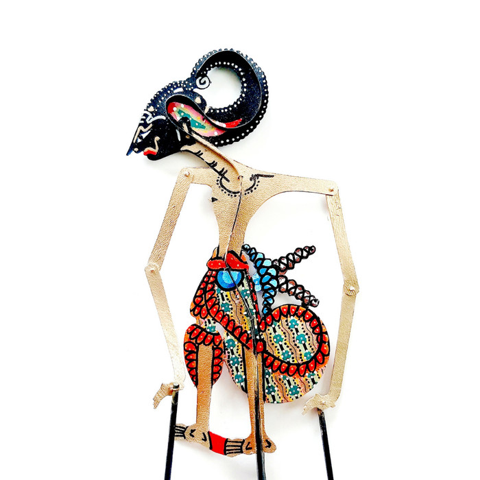
Arjuna merupakan tokoh wayang yang memiliki watak cerdik, sopan, pandai, teliti, pendiam, bijaksana, dan melindungi yang lemah. Sosok Arjuna digambarkan sebagai pemimpin Kadipaten Madukara yang berada di wilayah Amarta.
Tokoh wayang Arjuna dalam Pandawa Lima disebut panengah (panengah). Hal tersebut terkait dengan, urutan lahirnya sebagai anak ketiga dari lima bersaudara.
Arjuna dikisah mempunyai keahlian memanah dan mempunyai senjata sakti yang digunakan untuk perang melawan Kurawa. Dalam cerita pewayangan Jawa, Arjuna digambarkan sebagai sosok ksatria yang senang berkelana, berguru, dan bertapa.
Dalam kisah pewayangan, Arjuna sering digambarkan sebagai laki-laki sempurna dengan wajah rupawan dan berhati mulia. Sifatnya tersebut membuat putri hingga dayang, jatuh cinta.
Nama Tokoh Wayang Arjuna
Arjuna memiliki sejumlah nama dan julukan, seperti Permadi, Janaka, Parta, Dananjaya, dan Kumbalijali. Nama Arjuna lainnya, yaitu Panduwisi, Ciptaning Mintaraga, Indratanaya, Jahnwai, Indrasuta, Palguna, Danasmara, dan Margana. Arjuna juga mempunyai nama Begawan Mintaraga, nama yang digunakan saat menjalankan laku tapa di Puncak Indrakila. Ia melakukan tapa untuk memperoleh senjata sakti dari dewata, dimana senjata tersebut akan digunakan dalam perang melawan Kurawa.
Tokoh Wayang Arjuna dan Kisahnya
Dalam cerita pewayangan, Arjuna digambarkan sebagai sosok pahlawan yang merupakan putra Prabu Pandu dan Dewi Kunti. Arjuna berguru kepada Resi Drona di Padepokan Sukalima dan Resi Padmanaba di Pertapaan Untarayana. Melalui Guru Drona, Arjuna mengasah kepiawaiannya memanah yang telah dimiliki sejak kecil. Guru Drona mengunji kepiawaiannya muridnya dengan mandi di Sungai Gangga, kemudian ada buaya datang dan akan menggigitnya. Sebenarnya, Guru Drona dapat menyelamatkan diri, namun karena ingin menguji keberanian muridnya. Guru Drona berteriak minta tolong. Ternyata di antara semua muridnya, hanya Arjuna yang datang memberi pertolongan dengan memanah. Atas pengabdiannya, Guru Drona menghadiahi Arjuna dengan sebuah astra yang bernama "Brahmasirsa". Arjuna juga pernah menjadi seorang Brahmana di Goa Mintaraga dengan gelar Begawan Ciptaning.
Dalam kisahnya, Arjuna dijadikan sebagai ksatria oleh para dewa yang bertujuan untuk membinasakan Prabu Niwatkawaca, raja raksasa dari Manimantaka. Berkat jasanya tersebut, Arjuna diberi beberapa pusaka sakti: Gendewa dari Bhatara, Indra Panah Ardadadali dari Bhatara Kuwera, Panah Cundamanik dari Bhatara Narada.
Arjuna dan Perang Baratayudha
Arjuna berperang melawan para ksatria dari Kurawa dalam perang Baratayudha. Hampir saja, Arjuna menggunakan senjata pemungkasnya dalam perang Baratayudha berupa panah Pasopati untuk melawan Karna. Dimana, Karna adalah saudara Arjuna namun beda ayah.
Dalam pertempuran yang terjadi di Kurusetra, Karna sempat terjatuh dan siap menjadi sasaran empuk Arjuna. Arjuna sempat menahan diri untuk tidak meluncurkkan anak panah, karena mengangap perang Baratayudha adalah perang yang menggunakann aturan. Setelah melalui pergolakan batin, akhirnya Arjuna melepas pasopati dan tepat mengenai leher Karna. Karna gugur dalam pertempuran tersebut. Perang dua saudara tersebut dikenal dengan lakon Karna Tandhing.
- 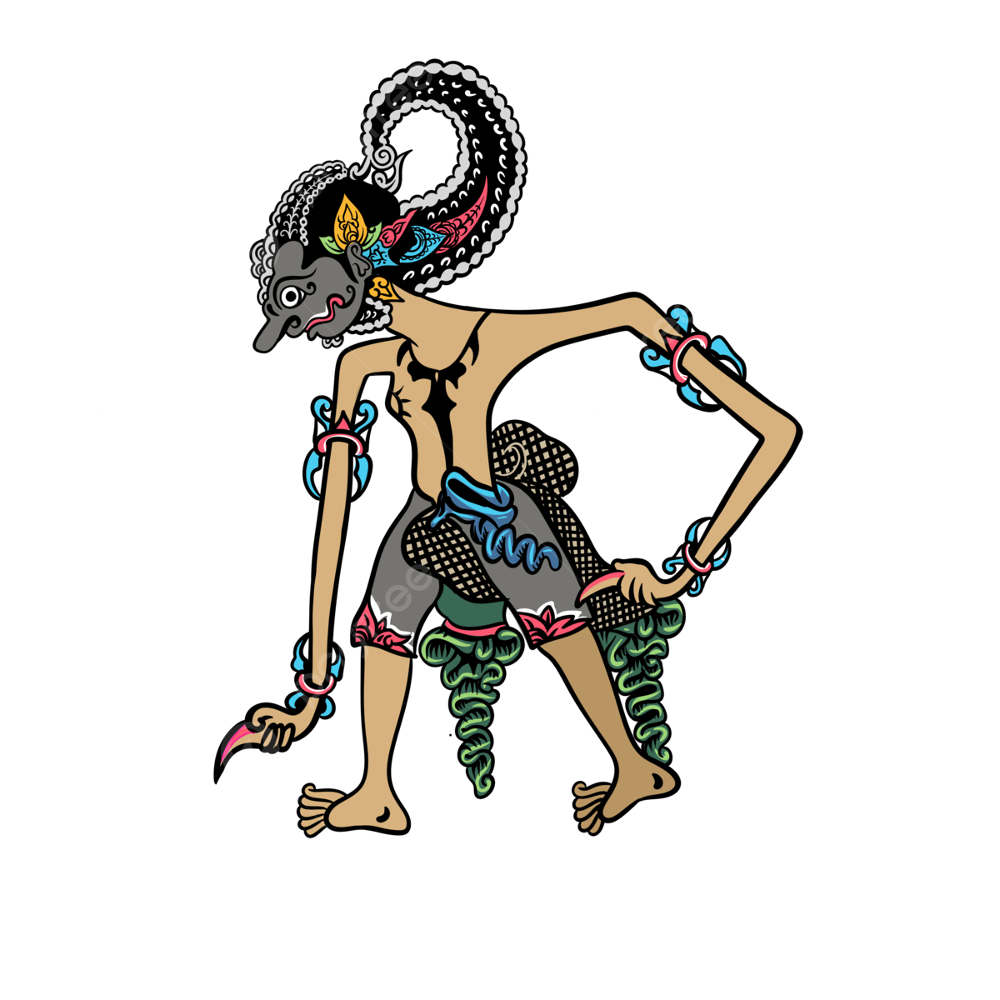
Bima digambarkan sebagai tokoh paling kuat di antara Pandawa, Bima adalah satria yang berpendirian teguh, gagah berani, kuat, patuh dan jujur, menganggap semua orang sama derajatnya, serta memiliki keteguhan sikap yang benar tetaplah benar dan yang salah tetaplah salah.
Bima Dalam Pewayangan Jawa
Sifat
Bima memiliki sifat gagah berani, teguh, kuat, tabah, patuh, jujur dan bijaksana serta menganggap semua orang sama derajatnya, sehingga dia digambarkan tidak pernah menggunakan bahasa halus (krama inggil) ataupun duduk di depan lawan bicaranya. Bima melakukan kedua hal ini (bicara dengan bahasa krama inggil dan duduk) hanya ketika menjadi seorang resi dalam lakon Bima Suci, dan ketika dia bertemu dengan Dewaruci. Ia mahir bermain gada, serta memiliki berbagai macam senjata, antara lain: Kuku Pancanaka, Gada Rujakpala, Alugara, Bargawa (kapak besar), dan Bargawasta. Sedangkan jenis ajian yang dimilikinya antara lain: Aji Bandungbandawasa, Aji Ketuglindhu, Aji Bayubraja dan Aji Blabak Pangantol-antol.
Bima juga memiliki pakaian yang melambangkan kebesaran, yaitu: Gelung Pudaksategal, Pupuk Jarot Asem, Sumping Surengpati, Kelatbahu Candrakirana, ikat pinggang Nagabanda dan Celana Cinde Udaraga. Sedangkan beberapa anugerah dewata yang diterimanya antara lain: Kampuh atau Kain Poleng Bintuluaji, Gelang Candrakirana, Kalung Nagasasra, Sumping Surengpati dan Pupuk Pudak Jarot Asem.
Dalam pencarian jati dirinya, Bima sering diberi tugas oleh gurunya—yang sesungguhnya dihasut oleh para Korawa untuk membunuh Bima—yang terasa mustahil untuk dikerjakan, seperti mencari kayu gung susuhing angin dan air banyu perwitasari, yang akhirnya membawa Bima bertemu dengan Dewaruci.
Istri dan Keturunan
Bima tinggal di kadipaten Jodipati, wilayah Indraprastha. Ia mempunyai tiga orang istri dan tiga orang anak, yaitu: Dewi Nagagini, berputra (mempunyai putra bernama) Arya Anantareja, Dewi Arimbi, berputra Raden Gatotkaca dan Dewi Urangayu, berputra Arya Anantasena.
Menurut versi Banyumas, Bima mempunyai satu istri lagi, yaitu Dewi Rekatawati, berputra Srenggini.

Nakula dan Sadewa menjadi salah satu lakon yang cukup populer di cerita wayang Jawa. Keduanya merupakan saudara kembar yang digambarkan sebagai pria yang rupawan, cerdas, dan senantiasa menaati Yudhistira.
Nakula dan Sadewa Dalam Pewayangan Jawa
Nakula dan Sadewa adalah adik bungsu dari lima bersaudara yang akrab dikenal dengan pandawa. Ia merupakan anak dari Dewi Madrim yang merupakan istri kedua dari Prabu Pandu. Sementara itu, ketiga saudaranya (Yudhistira, Bima, Arjuna) adalah putra Prabu Pandu dari istri pertamanya, yaitu Dewi Kunthi.
Meskipun mereka dilahirkan dari rahim ibu yang berbeda, namun nyatanya dapat menjadi keluarga yang kompak dan satu sama lain. Bahkan Nakula dan Sadewa semenjak kecil sangat dekat dengan Dewi Kunthi yang merupakan ibu tirinya. Hal itu dikarenakan ibu kandung dari Nakula dan Sadewa telah tiada ketika keduanya masih kecil.
Nakula dan Sadewa sangat menghormati dan patuh terhadap Yudhistira yang merupakan anak tertua dalam keluarga pandawa tersebut. Hal ini sangat berbeda dengan Bima dan Arjuna dimana mereka lebih banyak meninggalkan keraton apabila tidak sependapat dengan Yudhistira, sementara Nakula dan Sadewa sepenuhnya menerima Yudhistira apa adanya dan mengikuti keputusan kakak tertuanya itu.
Kelebihan Nakula Dan Sadewa
Nakula dan Sadewa dikenal memiliki kemampuan istimewa. Nakula memiliki keahlian dalam merawat dan mengendarai kuda atau sapi. Selain itu ia juga digambarkan sebagai sosok yang sangat menghibur hati, teliti dalam bertugas, dan mahir dalam memainkan pedang. Sementara Sadewa memiliki kepintaran yang luar biasa di dalam bidang astronomi, matahari, dan strategi perang bahkan ia dapat membaca masa depan seseorang.
Persamaan Nakula Dan Sadewa
Sebagai saudara kembar keduanya memiliki wajah yang sangat mirip. Hal itu membuat keduanya sulit untuk dibedakan apabila dilihat dari fisiknya, sehingga tidak jarang di antara keduanya sering kali tertukar, bahkan terkadang saudara-saudara mereka sendiri kesulitan mengenalinya. Selain itu, Nakula dan Sadewa adalah sosok yang kidal.
Sementara Sadewa sangat bertolak belakang dengan Nakula yang berkarakter pendiam, Sadewa adalah orang yang pandai dalam bertutur kata. Ia seperti seorang diplomat ulung dalam hal ketatanegaraan. Selain itu, Sadewa juga dikenal sebagai orang yang piawai dalam memimpin, berhubungan, dan berkomunikasi dengan banyak orang hal itu membuatnya mudah akrab dengan orang lain.
- 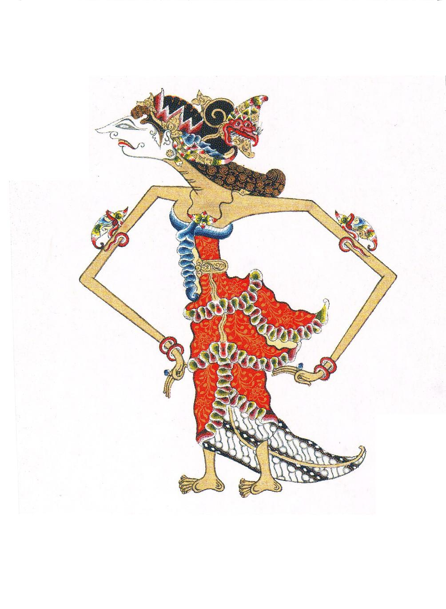
Cerita pewayangan Jawa yang terkenal seperti Mahabarata menjadikan tokoh-tokoh di dalamnya juga dikenal akan peran dan sosoknya. Salah satu tokoh yang sosoknya unik dalam cerita Mahabarata yakni Srikandi.
Srikandi adalah tokoh perempuan yang gagah berani dalam kisah Mahabharata. Srikandi merupakan dewi panglima perang Pandawa yang mahir dalam menggunakan senjata panah.
Disebutkan, Srikandi sejak kecil gemar dalam olah keprajuritan dan mahir menggunakan panah. Untuk mengasah kemampuan memanahnya, Srikandi berguru kepada Arjuna yang kemudian menjadi suaminya.
Srikandi merupakan putri kedua Prabu Drupada, raja negara Pancala dengan permaisuri Dewi Gandawati, putri Prabu Gandabayu dengan Dewi Gandini. Ia mempunyai dua orang saudara kandung bernama Dewi Drupadi/Dewi Kresna dan Arya Drestadyumna.
Suri Tauladan Prajurit Wanita
Srikandi bertindak sebagai penanggung jawab keselamatan dan keamanan kesatrian Madukara dengan segala isinya. Diceritakan dalam pewayangan Jawa dalam perang Baratayuda, Srikandi menjadi senopati perang Pandawa menggantikan Resi Seta, satria Wirata yang telah gugur untuk melawan Resi Bisma, senopati Agung bala tentara Kurawa. Dengan panah Hrusangkalinya Srikandi dapat membunuh Resi Bisma.
Reinkarnasi Dewi Amba
Disebutkan pula bahwa Srikandi mampu membunuh Resi Bisma atas kutukan Dewi Amba putri Prabu Darmahambara, raja negara Giyantipura yang ditakdirkan dapat membunuh Resi Bisma di kehidupan selanjutnya. Hal tersebut dilakukannya atas dendam Dewi Amba kepada Bisma yang telah menurunkan harga dirinya.
Dalam kitab Mahabharata jilid pertama Adiparwa dan jilid kelima Udyogaparwa disebutkan, Bisma menolak untuk menikahi Amba karena ia bersumpah untuk hidup melajang selamanya. Amba merasa terhina dan mencari berbagai cara untuk menaklukkan Bisma.
Namun, tidak ada yang dapat membantunya hingga akhirnya Amba berdoa kepada Dewa Siwa untuk bisa membunuh Bisma dan dikabulkan oleh Dewa Siwa, dengan catatan bahwa Amba bisa membunuh Bisma di kehidupan selanjutnya. Akhirnya Amba bunuh diri dan kemudian terlahir sebagai Srikandi.
Keberanian Srikandi
Berbeda dengan putri raja pada umumnya, Srikandi tidak suka berdiam diri di dalam istana. Ia berjiwa petualang yang menjadikannya salah satu ksatria wanita. Sifat keberanian yang dimiliki Srikandi juga membuat dirinya ditunjuk menjadi Panglima saat perang Bharatayudha dan berhadapan langsung dengan Bisma yang saat itu menjadi Senapati Perang Kurawa yang sangat sakti.
Sebagai Panglima Perang, Srikandi menjalankan tugasnya dengan baik dan mampu membuat tubuh Bisma jatuh berbalut panah Hrusangkali yang ditembakkan Srikandi. Ia menjadi sosok anomali dalam kisah perang puputan antar saudara laki-laki yang memperebutkan tahta Hastinapura.
Keberadaannya di perang kolosal tersebut menjadi simbol keberanian yang ada dalam diri para wanita. Hal ini juga menjadi bukti bahwa wanita seperti halnya Srikandi mampu mengerahkan akal dan tubuh mereka untuk berjuang dan mengambil andil dalam peperangan mereka sendiri dengan sikap tegas dan pantang menyerah.
Itulah gambaran kisah Srikandi, sosok Panglima Perang dari pihak Pandawa dalam kisah Mahabarata.
- 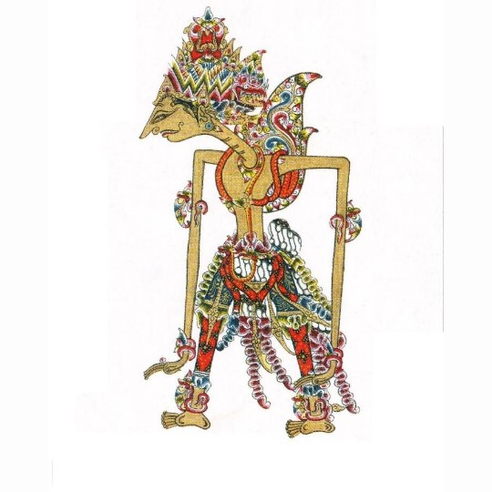
Rama adalah putra Prabu Dasarata dengan Dewi Ragu. Ia batal diobatkan menjadi raja karena ibu tirinya, Dewi Kekayi, menagih janji kepada Dasarata yang isinya jika Dasarata ingin memperistri Kekayi maka anak dari merekalah yang menjadi raja. Rama akhirnya menjalani hukuman buang di hutan Dandaka bersama isterinya, Dewi Shinta, dan adiknya, Lesmana, setelah merestui Raden Barata, anak Kekayi, naik takhta. Cobaan mulai datang ketika Shinta meminta ditangkapkan seekor rusa emas. Rama berusaha menangkap rusa emas permintaan Shinta.
Namun ternyata rusa tersebut hanyalah rusa jadi-jadian dan merupakan taktik licik Rahwana, seorang raja raksasa di Negara Alengka, untuk menculik Shinta. Rama dan Lesmana berupaya mencari Shinta. Perjalanan panjang mereka lalui hingga mendapatkan bantuan dari bala tentara kera dengan panglima bernama Anoman. Akhir cerita, Rama berhasil menumpas sang angkara murka Rahwana dan memboyong Shinta kembali. Sehebat-hebatnya angkara murka tidak akan bisa mengalahkan cinta sejati.
-Cerita Rama selengkapnya ada di Dewi Shinta-
- 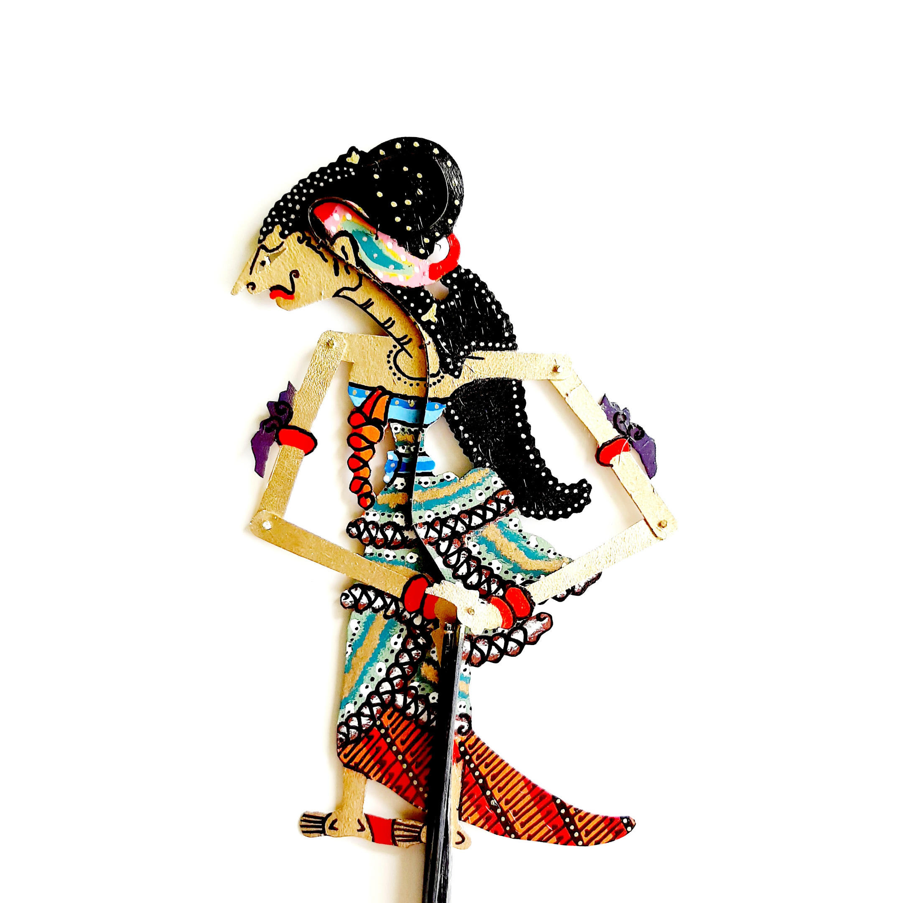
Nama Dewi Sinta selalu erat kaitannya dengan Raden Rama.
Kisah cinta mereka berdua begitu fenomenal dalam pewayangan epos Ramayana.
Kisah cinta mereka menjadi fenonemal lantaran seorang raksasa yang bernama Rahwana menculik Sinta.
Rahwana menculik Sinta karena begitu mengagumi kecantikannya dan berniat ingin merebutnya dari Rama.
Rahwana memiliki nama asli Prabu Dasamuka yang kerajaannya bernama Ngalengka.
Silsilah Keluarga Shinta
Dewi Sinta merupakan seorang putri dari raja Mantilireja yakni Prabu Janaka.
Dikisahkan jika sebenarnya Dewi Sinta merupakan anak dari Prabu Dasamuka dan Dewi Tari.
Saat usia kehamilan menginjak 7 bulan, Dewi Tari mengadakan upacara 7 bulanan.
Diundanglah para kerabat kerajaan, pendeta serta ahli nujum.
Upacara tujuh bulanan tersebut menjadi riuh saat salah satu ahli nujum dari Langkapura mengatakan jika kelak anak dari Prabu Dasamuka dan Dewi Tari akan terlahir menjadi anak yang cantik dan menimbulkan sebuah bahaya besar yakni kelak akan diperistri oleh ayahnya sendiri (Prabu Dasamuka).
Ramalan ahli nujum tersebut membuat Prabu Dasamuka marah besar sehingga dibunuhlah ahli nujum tersebut.
Usai upacara tujuh bulanan tersebut, Prabu Dasamuka meninggalkan Dewi Tari untuk bertapa dalam kurun waktu yang tidak bisa diperkirakan.
Dewi Tari melahirkan Dewi Sinta tanpa didampingi suaminya.
Semua orang dibuat terpana akan kecantikan Dewi Sinta.
Raden Gunawan Wibisana selaku adik termuda dari Prabu Dasamuka tidak menginginkan ramalan dari ahli nujum tersebut terjadi sehingga Dewi Sinta diamankan dengan melarungnya ke sungai.
Dewi Sinta ditemukan oleh Prabu Janaka, seorang raja dari Mantilireja dan akhirnya dirawat hingga dewasa.
Dewi Sinta pada akhirnya menikah dengan Rama.
Rama berhasil memenangkan sayembara yang diselenggarakan oleh Prabu Janaka dengan hadiah yakni diperkenankan menikahi putrinya yakni Dewi Sinta yang cantik jelita.
Rama sendiri merupakan anak dari Prabu Dasarata, pemimpin negara Ayodyapura.
Pada saat Prabu Dasarata sudah lanjut usia, tahta raja diserahkan pada Rama.
Kehidupan pernikahan Rama dan Sinta pada awalnya rukun bahagia namun hal tersebut berbanding saat Prabu Dasamuka mulai berusaha memisahkan mereka berdua.
Pada saat penculikan Sinta, seekor burung sakti bernama Jatayu yang merupakan sahabat Prabu Dasarata (ayahnya Rama) berusaha membantu Sinta dengan menyerang Prabu Dasamuka namun pada akhirnya Sinta berhasil diculik.
Pada saat penculikan, Prabu Dasamuka dibuat kesal oleh kesetiaan Sinta pada Rama.
Jatayu dalam keadaan lemah akibat kalah perang melawan Prabu Dasamuka pada akhirnya berhasil menemui Rama dan menceritakan kejadian yang sebenarnya.
Di akhir cerita, Prabu Dasamuka berhasil dikalahkan oleh Rama dengan bantuan Raden Hanoman dan kemudian tewas.
Sinta berhasil bersatu dengan Rama.
- 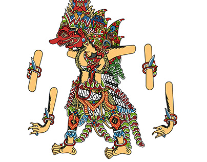
Deskripsi Rahwana
Rupa wayang Dasamuka (Rahwana) dengan sunggingan seluruh badan berwarna kuning emas. Bermahkota dengan lukisan sembilan muka berwarna kuning emas agak gelap yang menggabarkan bahwa Dasamuka memiliki sepuluh muka dengan berarmbut terurai hingga bawah pundak, mengenakan praba. Bermata plelengan, hidung mungkal gerang, dan mulut gusen. Berjenggot dengan dada bersimbar disertai tangan berjumlah sepuluh pada bagian depan dan belakang (kanan dan kiri). Bersampur dan berulur-ulur Naga karangrang, berkelatbahu rupa Naga memangsa, bergelang kana tersusun calumpringan, berkeroncong rupa badan Nagaraja, bersumping sekar pudak. Beruncal wastra dan beruncal kencana, bercelana cinde merah muda, bokongan banyakan dengan sembuliyan. Bersembuliyan ke bawah tiga buah dan ke belakang dua buah. Bergapit dan bertuding dari bahan tanduk kerbau. Telapak kaki depan tampak datar sedang yang belakang tumit agak diangkat, seolah-olah hendak melangkah. Pada bagian palemahan yang memiliki dasar warna merah terdapat tulisan beraksara Jawa " R. Basuki A" dengan menggunakan spidol warna emas.
Sejarah
Rahwana merupakan anak pertama Resi Wisrawa dan Dewi Sukesi dari empat bersaudara. la memiliki adik raksasa, raksasi, dan ksatria yaitu Kumbakarna, Sarpakenaka, dan Gunawan Wibisana. Pada suatu kesempatan Rahwana menculik Sita kekasih Rama, sehingga menyebabkan perseteruan hebat antara keduanya yang mempertaruhkan harkat, martabat, harta dan tahta yang dimiliki masing-masing. Peperangan dahsyat antara Prajurit Kera bala tentara Rama dari Pancawati berhasil menghancurkan bala tentara raksasa Rahwana dari Alengkadiraja. Seluruh pasukan Alengka tersapu habis, sehingga tinggal rahwana maju ke medan laga dan berperang tanding melawan Ramawijaya. Rahwana gugur di medan tempur ketika perang habis- habisan melawan Ramawijaya. Meski jasad Rahwana sudah ditimbun gunung oleh Anoman, namun sukma Rahwana tetap hidup kelak mengganggu tokoh-tokoh pada Mahabharata yang selalu menegakkan keutamaan, kebenaran, dan keadilan.
- 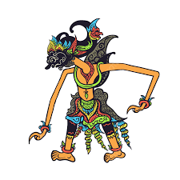
Werkudara merupakan bagian dari Pandawa. Werkudara dikenal juga sebagai Bima. Werkudara digambarkan memiliki wajah rupawan dan berhidung tumpul dengan mata sehitam telaga. Werkudara memiliki perawakan yang besar dan gagah perkasa.
Panggrambaran Tokoh Werkudara
Werkudara merupakan bagian dari Pandawa. Werkudara dikenal juga sebagai Bima. Werkudara digambarkan memiliki wajah rupawan dan berhidung tumpul dengan mata sehitam telaga. Werkudara memiliki perawakan yang besar dan gagah perkasa. Werkudara diketahui mengubah penampilan rambutnya yang awalnya ngore (urai) menjadi gelung (kuncir).
Postur tubuh dari Werkudara terlihat seperti sedang melaksanakan sholat, hal ini dikarenakan, Werkudara selalu menundukkan wajahnya dan bagian tubuh belakangnya menjulang tinggi. Werkudara punya sebuah senjata bernama Aji Pancaka yang selalu digenggam dengan kuat. Selain itu, werkudara memakai gelang supit urang. Werkudara merupakan tokoh wayang yang punya kekuatan luar biasa dan selalu melindungi keadilan serta kebenaran.
Werkudara dikenal sebagai tokoh yang selalu menjunjung tinggi kehormatan dari para Pandawa. Werkudara memiliki sifat yang dalam bahasa Jawa: yen kaku kena kanggo teken, yen lemes kena kanggo dhadung. Ini diartikan dengan kalau kaku dapat dibuat tongkat, kalau kendur dapat dibuat tali.
Werkudara Sebagai Simbol Rukun Islam Kedua
Tokoh dari Pandawa disimbolkan sebagai rukun islam. Penyimbolan ini dilakukan sesuai dengan urutan kelahiran. Sehingga, Werkudara disimbolkan sebagai rukun islam yang kedua yakni sholat lima waktu. Hal-hal yang menjadikan Werkudara simbol rukun islam kedua yakni:
1. Werkudara tidak akan mau menghiraukan dan melayani orang lain jika semua urusannya belum selesai ia lakukan. Hal ini menjadi isyarat bahwa sholat tidak boleh dibatalkan. Sholat harus selalu senantiasa dijalankan dengan baik.
2. Dalam pewayangan, Werkudara diceritakan selalu tidur dengan keadaan berdiri. Hal ini menjadi isyarat bahwa sholat harus selalu ditegakkan.
3. Memiliki sebuah senjata yang bernama Kuku Pancanaka, merupakan kuku panjang tegak. Hal ini juga menjadi salah satu isyarat bahwa sholat merupakan hal yang wajib dan harus untuk ditegakkan dalam kondisi dan situasi apapun.
Kisah Teladan dari Werkudara
1. Mengajarkan Tentang Keberanian, Pantang Menyerah, dan Kesetiaan
Sikap teladan yang bisa dipelajari dari Werkudara adalah keberanian, kesetiaan dan sikap pantang menyerahnya. Dalam hidup, hal ini sangat penting karena dengan menjadi berani, kita bisa menyelamatkan kehidupan kita sendiri dan mampu meraih apa yang diinginkan.
2. Penting dalam Memilih Teman
Werkudara diceritakan selalu membela kebenaran dan menuntut keadilan. Meskipun terdengar berat, karena harus memilih-milih teman, namun hal ini merupakan pilihan yang tepat agar kita menjadi orang yang bermanfaat dan berguna bagi orang lain.
3. Pentingnya Berhati Lembut
Werkudara diceritakan sebagai sosok yang berhati lembut, meskipun dia adalah sosok prajurit yang dikenal akan kekuatan dan ketangguhannya. Hal ini termasuk penting untuk diteladani, karena dengan berhati lembut, kita mampu memikirkan, merasakan dan memahami apa yang sedang dirasakan oleh orang lain. Jadi, kita bisa menjadi pribadi yang baik dan mampu membantu orang-orang yang sedang kesulitan di sekitar kita.
- 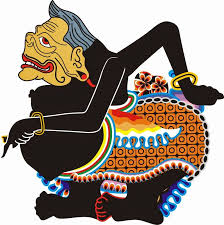
Semar (Jawa: ꦱꦼꦩꦂ; haseming samar-samar) atau Batara Ismaya Batara Iswara Jurudyah Punta Prasanta Semar (Jawa: ꦨꦛꦴꦫꦅꦰ꧀ꦩꦪꦨꦛꦴꦫꦅꦯ꧀ꦮꦫꦗꦸꦫꦸꦢꦾꦃꦥꦸꦤ꧀ꦠꦥꦿꦰꦤ꧀ꦠꦱꦼꦼꦩꦂ, translit. Bathårå Ismåyå Bathårå Iswårå Jurudyah Puntå Prasantå Semar) adalah nama tokoh utama dalam punakawan di pewayangan Jawa. Tokoh ini dikisahkan sebagai pengasuh sekaligus penasihat para kesatria dalam pementasan wiracarita Mahabharata dan Ramayana. Meski demikian, nama Semar tidak ditemukan dalam naskah asli kedua wiracarita tersebut (berbahasa Sanskerta), karena tokoh ini merupakan ciptaan tulen pujangga Jawa.
Bentuk Fisik
Semar memiliki bentuk fisik yang sangat unik, seolah-olah ia merupakan simbol penggambaran jagad raya. Tubuhnya yang bulat merupakan simbol dari bumi, tempat tinggal umat manusia dan makhluk lainnya. Semar selalu tersenyum, tetapi bermata sembab. Penggambaran ini sebagai simbol suka dan duka. Wajahnya tua tetapi potongan rambutnya bergaya kuncung seperti anak kecil, sebagai simbol tua dan muda. Ia berkelamin laki-laki, tetapi memiliki payudara seperti perempuan, sebagai simbol pria dan wanita. Ia penjelmaan dewa tetapi hidup sebagai rakyat jelata, sebagai simbol atasan dan bawahan.
Sejarah
Menurut sejarawan Prof. Dr. Slamet Muljana, tokoh Semar pertama kali ditemukan dalam karya sastra zaman Kerajaan Majapahit berjudul Sudamala.[1] Selain dalam bentuk kakawin, kisah Sudamala juga dipahat sebagai relief dalam Candi Sukuh yang berangka tahun 1437.[2]
Semar dikisahkan sebagai abdi atau hamba tokoh utama cerita tersebut, yaitu Sadewa dari keluarga Pandawa. Tentu saja peran Semar tidak hanya sebagai pengikut saja, melainkan juga sebagai pelontar humor untuk mencairkan suasana yang tegang.
Pada zaman berikutnya, ketika kerajaan-kerajaan Islam berkembang di Pulau Jawa, pewayangan pun dipergunakan sebagai salah satu media dakwah. Kisah-kisah yang dipentaskan masih seputar Mahabharata yang saat itu sudah melekat kuat dalam memori masyarakat Jawa. Salah satu ulama yang terkenal sebagai ahli budaya, misalnya Sunan Kalijaga. Dalam pementasan wayang, tokoh Semar masih tetap dipertahankan keberadaannya, bahkan peran aktifnya lebih banyak daripada dalam kisah Sudamala.
Dalam perkembangan selanjutnya, derajat Semar semakin meningkat lagi. Para pujangga Jawa dalam karya-karya sastra mereka mengisahkan Semar bukan sekadar rakyat jelata biasa, melainkan penjelmaan Batara Ismaya, kakak nomor 2 dari Batara Guru/ Sang Hyang Jagad Guru Pratingkah, Sang Hyang Batara Manikmaya ,Sang Hyang Batara Nilakanta yaitu raja para dewa. dan Raja Tribuwana
Asal Usul
Terdapat beberapa versi tentang kelahiran atau asal usul Semar. Namun semuanya menyebut tokoh ini sebagai penjelmaan dewa.[3]
Dalam naskah Serat Kanda dikisahkan, penguasa kahyangan bernama Sang Hyang Batara Nurrasa memiliki dua orang putra bernama Sang Hyang Batara Tunggal dan Sang Hyang Batara Wenang/ Sang Hyang Asip Prono atau Sang Hyang Asip Rono. Karena Sang Hyang Tunggal berwajah jelek, maka takhta kahyangan pun diwariskan kepada Sang Hyang Wenang. Dari Sang Hyang Wenang kemudian diwariskan kepada putranya yang bernama Batara Guru. Sang Hyang Tunggal kemudian menjadi pengasuh para kesatria keturunan Batara Guru, dengan nama Semar.
Dalam naskah Paramayoga dikisahkan, Sang Hyang Tunggal adalah anak dari Sang Hyang Wenang. Sang HyangTunggal kemudian menikah dengan Dewi Rakti atau Batari Rakti, seorang putri raja jin kepiting bernama Sang Hyang Yuyut. Dari perkawinan itu lahir sebutir mustika berwujud telur yang kemudian berubah menjadi dua orang pria. Keduanya masing-masing diberi nama Ismaya untuk yang berkulit hitam, dan Manikmaya untuk yang berkulit putih. Ismaya merasa rendah diri sehingga membuat Sanghyang Tunggal kurang berkenan. Takhta kahyangan pun diwariskan kepada Manikmaya, yang kemudian bergelar Batara Guru. Sementara itu Ismaya hanya diberi kedudukan sebagai penguasa alam Sunyaruri, atau tempat tinggal golongan makhluk halus. Putra sulung Ismaya yang bernama Batara Wungkuhan memiliki anak berbadan bulat bernama Janggan Smarasanta, atau disingkat Semar. Ia menjadi pengasuh keturunan Batara Guru yang bernama Resi Manumayasa dan berlanjut sampai ke anak-cucunya. Dalam keadaan istimewa, Ismaya dapat merasuki Semar sehingga Semar pun menjadi sosok yang sangat ditakuti, bahkan oleh para dewa sekalipun. Jadi menurut versi ini, Semar adalah cucu dari Ismaya.
Dalam naskah Purwakanda dikisahkan, Sanghyang Tunggal memiliki empat orang putra bernama Sang Hyang Batara Puguh, Sang Hyang Batara Punggung, Sang Hyang Batara Manan, dan Sang Hyang Batara Samba. Suatu hari terdengar kabar bahwa takhta kahyangan akan diwariskan kepada Samba. Hal ini membuat ketiga kakaknya merasa iri. Samba pun diculik dan disiksa hendak dibunuh. Namun perbuatan tersebut diketahui oleh ayah mereka. Sanghyang Tunggal pun mengutuk ketiga putranya tersebut menjadi buruk rupa. Puguh berganti nama menjadi Togog Tejomantri sedangkan Punggung menjadi Semar. Keduanya diturunkan ke dunia sebagai pengasuh keturunan Samba, yang kemudian bergelar Batara Guru. Sementara itu Manan mendapat pengampunan karena dirinya hanya ikut-ikutan saja. Manan kemudian bergelar Batara Narada atau Resi Kanekaputra dan diangkat sebagai penasihat Batara Guru.
Dalam naskah Purwacarita dikisahkan, Sanghyang Tunggal menikah dengan Dewi Rekatawati putri Sanghyang Rekatatama. Dari perkawinan itu lahir sebutir telur yang bercahaya. Sanghyang Tunggal dengan perasaan kesal membanting telur itu sehingga pecah menjadi tiga bagian, yaitu cangkang, putih, dan kuning telur. Ketiganya masing-masing menjelma menjadi laki-laki. Yang berasal dari cangkang diberi nama Antaga, yang berasal dari putih telur diberi nama Ismaya, sedangkan yang berasal dari kuningnya diberi nama Manikmaya. Pada suatu hari Antaga dan Ismaya berselisih karena masing-masing ingin menjadi pewaris takhta kahyangan. Keduanya pun mengadakan perlombaan menelan gunung. Antaga berusaha melahap gunung tersebut dengan sekali telan namun justru mengalami kecelakaan. Mulutnya robek dan matanya melebar. Ismaya menggunakan cara lain, yaitu dengan memakan gunung tersebut sedikit demi sedikit. Setelah melewati bebarpa hari seluruh bagian gunung pun berpindah ke dalam tubuh Ismaya, tetapi tidak berhasil ia keluarkan. Akibatnya sejak saat itu Ismaya pun bertubuh bulat. Sanghyang Tunggal mengetahui ambisi dan keserakahan kedua putranya itu. Mereka pun dihukum menjadi manusia biasa dan harus turun ke dunia ,Manikmaya yang kemudian diangkat sebagai raja kahyangan Tribhuwana, bergelar Batara Guru. Antaga dan Ismaya pun turun ke dunia. Masing-masing memakai nama Togog Tejomantri mempunyai teman Bilung Sarawita yang ditugaskan untuk mengemong mengasuh atau menuntun bangsa yang berwatak serakah bengis kejam angkara murka dan Semar ditugaskan untuk mengasuh mengemong menuntun para manusia Satria yang mempuyai watak santun berbudi pekerti luhur
Silsilah dan Keluarga
Dalam pewayangan dikisahkan, Batara Ismaya sewaktu masih di kahyangan sempat dijodohkan dengan sepupunya yang bernama Dewi Senggani atau Batari Senggani Dari perkawinan itu lahir sepuluh orang anak, yaitu:
Batara Wungkuhan
Batara Surya
Batara Candra
Batara Patuk
Batara Temboro
Batara Siwah
Batara Kuwera
Batara Yamadipati
Batara Kamajaya
Batara Mahyanti
Batari Darmanastiti
Semar sebagai penjelmaan Ismaya mengabdi untuk pertama kali kepada Resi Manumayasa, leluhur para Pandawa. Pada suatu hari Semar diserang dua ekor harimau berwarna merah dan putih. Manumanasa memanah keduanya sehingga berubah ke wujud asli, yaitu sepasang bidadari bernama Kanastri dan Kaniraras. Berkat pertolongan Manumanasa, kedua bidadari tersebut telah terbebas dari kutukan yang mereka jalani. Kanistri kemudian menjadi istri Semar, dan biasa dipanggil dengan sebutan Kanastren. Sementara itu, Kaniraras menjadi istri Manumanasa, dan namanya diganti menjadi Retnawati, karena kakak perempuan Manumanasa juga bernama Kaniraras.
Pasangan Punakawan
Dalam pewayangan Jawa Tengah, Semar selalu disertai oleh anak-anaknya, yaitu Gareng, Petruk, dan Bagong. Namun sesungguhnya ketiganya bukan anak kandung Semar. Gareng adalah putra seorang pendeta yang mengalami kutukan dan terbebas oleh Semar. Petruk adalah putra seorang raja bangsa Gandharwa yaitu Prabu Gandarwarajabali. Sementara Bagong tercipta dari bayangan Semar berkat sabda sakti Sang Hyang Wenang
Dalam pewayangan Sunda, urutan anak-anak Semar adalah Cepot Astrajingga, Dawala, dan Gareng. Sementara itu, dalam pewayangan Jawa Timuran, Semar hanya didampingi satu orang anak saja, bernama Bagong, yang juga memiliki seorang anak bernama Besut.
Keistimewaan
Semar merupakan tokoh pewayangan ciptaan pujangga lokal. Meskipun statusnya hanya sebagai abdi, tetapi keluhurannya sejajar dengan Prabu Kresna dalam kisah Mahabharata. Jika dalam perang Baratayuda menurut versi aslinya, penasihat pihak Pandawa hanya Kresna seorang, maka dalam pewayangan, jumlahnya ditambah menjadi dua, dan yang satunya adalah Semar.
Semar dalam karya sastra hanya ditampilkan sebagai pengasuh keturunan Resi Manumanasa, terutama para Pandawa yang merupakan tokoh utama kisah Mahabharata. Namun dalam pementasan wayang yang bertemakan Ramayana, para dalang juga biasa menampilkan Semar sebagai pengasuh keluarga Sri Ramawijaya ataupun Sugriwa. Seolah-olah Semar selalu muncul dalam setiap pementasan wayang, tidak peduli apapun judul yang sedang dikisahkan.
Dalam pewayangan, Semar bertindak sebagai pengasuh golongan kesatria, sedangkan Togog sebagai pengasuh kaum raksasa. Dapat dipastikan anak asuh Semar selalu dapat mengalahkan anak asuh Togog. Hal ini sesungguhnya merupakan simbol belaka. Semar merupakan gambaran perpaduan rakyat kecil sekaligus dewa kahyangan. Jadi, apabila para pemerintah - yang disimbolkan sebagai kaum kesatria asuhan Semar - mendengarkan suara rakyat kecil yang bagaikan suara Tuhan, maka negara yang dipimpinnya pasti menjadi nagara yang unggul dan sentosa.
- 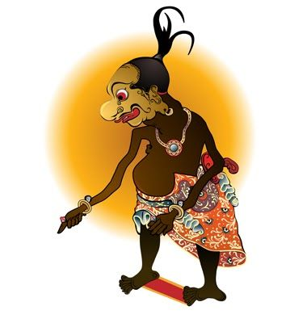
Gareng (Jawa: ꦒꦫꦺꦁ; kering) merupakan salah satu tokoh punakawan dalam pewayangan Jawa yang diciptakan oleh seorang pujangga Jawa. Tokoh punakawan pertama kali muncul dalam karya sastra gatotkacasraya, karangan Mpu Panuluh pada zaman kerajaan Kadiri. Dalam naskah Mahabarata, dan Ramayana dari India tidak terdapat nama-nama tokoh punakawan.
Historiografi
Gareng adalah Punakawan yang memiliki tubuh yang kurang sempurna dengan hidung bulat, tangan patah, kaki pincang, dan mata yang juling. Sosok Gareng diartikan sebagai pesan untuk berhati-hati dalam bertindak dan tidak mengambil milik orang lain atau yang bukan haknya. Tokoh Gareng dalam Punakawan memiliki dasanama seperti Nala Gareng, Pancalpanor, dan Pegatwaja. Dalam cerita pewayangan, Gareng diceritakan sebagai anak sulung Semar.
Dalam suatu carangan Gareng pernah menjadi raja di Paranggumiwayang dengan gelar Prabu Pandupragola. Saat itu dia berhasil mengalahkan Prabu Welgeduwelbeh raja dari Borneo yang tidak lain adalah penjelmaan dari saudaranya sendiri yaitu Petruk.
Dulunya, Gareng berwujud satria tampan bernama Bambang Sukodadi dari padepokan Bluluktiba. Gareng sangat sakti namun sombong, sehingga selalu menantang duel setiap satria yang ditemuinya. Suatu hari, saat baru saja menyelesaikan tapanya, ia berjumpa dengan satria lain bernama Bambang Panyukilan. Karena suatu kesalahpahaman, mereka malah berkelahi. Dari hasil perkelahian itu, tidak ada yang menang dan kalah, bahkan wajah mereka berdua rusak. Kemudian datanglah Batara Ismaya (Semar) yang kemudian melerai mereka. Karena Batara Ismaya ini adalah pamong para satria Pandawa yang berjalan di atas kebenaran, maka dalam bentuk Jangganan Samara Anta, dia (Ismaya) memberi nasihat kepada kedua satria yang baru saja berkelahi itu.
Karena kagum oleh nasihat Batara Ismaya, kedua satria itu minta mengabdi dan minta diaku anak oleh Lurah Karang Kadempel, titisan dewa (Batara Ismaya) itu. Akhirnya Jangganan Samara Anta bersedia menerima mereka, asal kedua satria itu mau menemani dia menjadi pamong para kesatria berbudi luhur (Pandawa), dan akhirnya mereka berdua setuju. Gareng kemudian diangkat menjadi anak tertua (sulung) dari Semar.[1]
Komik dan Film
Pada tahun 1960an, di Indonesia pernah diterbitkan dagelan versi komik dari tokoh punakawan ini. Komik tersebut berjudul Petruk dan Gareng. Sebenarnya bukan hanya satu komikus yang pernah membuat komik ini, tetapi Indri Soedono adalah komikus yang disebut mengawalinya. Indri Soedono adalah komikus yang paling produktif membuat komik Petruk dan Gareng ini pada tahun 1960an hingga tahun 1970an, karya-karyanya banyak diterbitkan oleh CV Loka Tjipta Semarang. Komikus lain yang mengikutinya adalah Oerip, Rini AS, Leo, Sopoiki, Tjepi, Ricky NS, dan Tatang Suhenra.
Di antarapara komikus yang pernah menggarap Petruk dan Gareng, Tatang S adalah salah satu komikus yang paling tenar sebagai membuat komik Petruk dan Gareng karena dia yang masih tetap bertahan membuat komik ini meski pada tahun 1980an dunia perkomikan di Indonesia mulai meredup. Dia membuat komik Petruk dan Gareng dengan format sederhana dan mendistribusikan langsung ke sekolah-sekolah dasar melalui penjual mainan anak-anak. Komik dengan format sederhana tersebut kebanyakan diterbitkan Gultom Agency.
Komik Petruk dan Gareng yang pernah digarap oleh para komikus Indonesia ini berbeda dengan kisah pewayangan aslinya, setting dari komik ini lebih modern. Mulai masyarakat perkotaan hingga masyarakat pedesaan, lengkap dengan atribut-atribut masa kini yaitu sepeda motor dan mobil.
Kemudian pada tahun 2011, pertama kali dagelan Petruk dan Gareng versi komik ini dibuat filmnya. Film tersebut berjudul Gareng dan Petruk dalam kisah Super - Horror the Movie. Film berdurasi 27 menit ini diputar pertama kali di Bioskop 21 Dieng Plasa Kota Malang. Film komedi ini dibuat oleh Padepokan Film Malang, salah satu komunitas film di Kota Malang bekerjasama dengan Radio MFM dan Indosat.
- 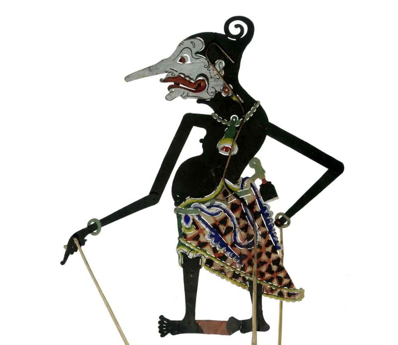
Petruk (Jawa: ꦥꦺꦠꦿꦸꦏ꧀) adalah tokoh punakawan dalam pewayangan Jawa, di pihak keturunan/trah Witaradya. Petruk tidak disebutkan dalam kitab Mahabarata dari India. Keberadaan tokoh ini dalam dunia pewayangan merupakan gubahan asli masyarakat Jawa. Di ranah Pasundan (Jawa Barat), tokoh Petruk lebih dikenal dengan nama Dawala atau Udel.
Kisah | Masa Lalu
Menurut pedalangan, ia adalah anak Raja Gandarwa raksasa di pertapaan dan bertempat di dalam laut bernama Begawan Salantara. Sebelumnya ia bernama Bambang Pecruk Panyukilan. Ia gemar bersenda gurau, baik dengan ucapan maupun tingkah laku dan senang berkelahi. Ia seorang yang pilih tanding/sakti di tempat kediamannya dan daerah sekitarnya. Oleh karena itu ia ingin berkelana guna menguji kekuatan dan kesaktiannya.
Di tengah jalan ia bertemu dengan Bambang Sukodadi atau Bambang Sukasti dari pertapaan Bluluktiba yang pergi dari padepokannya di atas bukit, untuk mencoba kekebalannya. Karena mempunyai maksud yang sama, maka terjadilah perang tanding. Mereka berkelahi sangat lama, saling menghantam, bergumul, tarik-menarik, tendang-menendang, injak-menginjak, hingga tubuhnya menjadi cacat dan berubah sama sekali dari wujud aslinya yang tampan. Perkelahian ini kemudian dipisahkan oleh Janggan Smarasanta (Semar) dan Bagong yang mengiringi Batara Ismaya. Mereka diberi petuah dan nasihat sehingga akhirnya keduanya menyerahkan diri dan berguru kepada Smara/Semar dan mengabdi kepada Sanghyang Ismaya. Demikianlah peristiwa tersebut diceritakan dalam lakon Batara Ismaya Krama.
Karena perubahan wujud tersebut masing-masing kemudian berganti nama. Bambang Pecruk Panyukilan menjadi Petruk, sedangkan Bambang Sukodadi menjadi Gareng.
Istri dan Keturunan
Petruk mempunyai istri bernama Dewi Prantawati, putri Prabu Sri Bathara Kresna , Raja Negara Kerajaan Dwarawati. Dalam perkawinan ini mereka mempunyai anak lelaki dan diberi nama Bambang Lengkungkusuma.
Dalam cerita Gareng Dadi Ratu, sebagai syarat jika Petruk berhasil mengalahkan Prabu Pandupragolamanik (yang tidak lain adalah kakaknya sendiri, Nala Gareng), ia meminta imbalan berupa "anak ayam cemani" pemberian Sang Hyang Wenang (Sang Hyang Asip Prono /Rono) yang diberikan kepada Petruk lalu diberikan kepada Kresna.[1] Hadiah ini terwujud dalam cerita Petruk Nagih Janji, di mana dengan susah payah ia berhasil mengalahkan saingan berat dari Astina, yaitu Lesmana Mandrakumara, Putra Prabu Duryudana dengan Dewi Banowati dan berhasil pula memperistri salah satu putri Kresna yang bernama Dewi Prantawati.[2]
Petruk Dalam Lakon Pewayangan
Oleh karena Petruk merupakan tokoh pelawak/dagelan (Jawa), kemudian oleh seorang dalang digubah suatu lakon khusus yang penuh dengan lelucon-lelucon dan kemudian diikuti dalang-dalang lainnya, sehingga terdapat banyak sekali lakon-lakon yang menceritakan kisah-kisah Petruk yang menggelikan, contohnya lakon Pétruk Ilang Pethèlé "Petruk kehilangan kapaknya",
Dalam kisah Ambangan Candi Spataharga/Saptaraga, Dewi Mustakaweni, putri dari Prabu Niwatakawaca (Nirbita) Raja negara Kerajaan Imantaka/Imanimantaka atau Manikmantaka , berhasil mencuri pusaka Kyai Jamus Kalimasada dengan jalan menyamar sebagai kerabat Pandawa (Gatutkaca), sehingga dengan mudah ia dapat membawa lari pusaka tersebut. Kalimasada kemudian menjadi rebutan antara kedua negara itu. Di dalam kekeruhan dan kekacauan yang timbul tersebut, Petruk mengambil kesempatan menyembunyikan Kalimasada, sehingga karena kekuatan dan pengaruhnya yang ampuh, Petruk dapat menjadi raja menduduki singgasana Kerajaan Lojitengara dan bergelar Prabu Welgeduwelbeh. Lakon ini terkenal dengan judul Petruk Dadi Ratu ("Petruk Menjadi Raja"). Prabu Welgeduwelbeh/Petruk dengan kesaktiannya dapat membuka rahasia Prabu Pandupragola, raja negara Tracanggribig, yang tidak lain adalah kakaknya sendiri, yaitu Nala Gareng. Dan sebaliknya Bagong-lah yang menurunkan Prabu Welgeduwelbeh dari tahta kerajaan Lojitengara dan terbongkar rahasianya menjadi Petruk kembali. Kalimasada kemudian dikembalikan kepada pemilik aslinya, Prabu Puntadewa.
Hubungan dengan punakawan lainnya
Petruk dan panakawan yang lain (Semar, Gareng dan Bagong) selalu hidup di dalam suasana kerukunan sebagai satu keluarga. Bila tidak ada kepentingan yang istimewa, mereka tidak pernah berpisah satu sama lain. Mengenai Punakawan, punakawan berarti ”kawan yang menyaksikan” atau pengiring. Saksi dianggap sah, apabila terdiri dari dua orang, yang terbaik apabila saksi tersebut terdiri dari orang-orang yang bukan sekeluarga. Sebagai saksi seseorang harus dekat dan mengetahui sesuatu yang harus disaksikannya. Di dalam pedalangan, saksi atau punakawan itu memang hanya terdiri dari dua orang, yaitu Semar dan Bagong bagi trah Witaradya.
Sebelum Sanghyang Ismaya menjelma dalam diri cucunya yang bernama Smarasanta (Semar), kecuali Semar dengan Bagong yang tercipta dari bayangannya, mereka kemudian mendapatkan Gareng/Bambang Sukodadi dan Petruk/Bambang Panyukilan. Setelah Batara Ismaya menjelma kepada Janggan Smarasanta (menjadi Semar), maka Gareng dan Petruk tetap menggabungkan diri kepada Semar dan Bagong. Disinilah saat mulai adanya punakawan yang terdiri dari empat orang dan kemudian mendapat sebutan dengan nana ”parepat/prapat”.
Komik dan Film
Pada tahun 1960an, di Indonesia pernah diterbitkan dagelan versi komik dari tokoh punakawan ini. Komik tersebut berjudul Petruk dan Gareng. Sebenarnya bukan hanya satu komikus yang pernah membuat komik ini, tetapi Indri Soedono adalah komikus yang disebut mengawalinya. Indri Soedono adalah komikus yang paling produktif membuat komik Petruk dan Gareng ini pada tahun 1960an hingga tahun 1970an, karya-karyanya banyak diterbitkan oleh CV Loka Tjipta Semarang. Komikus lain yang mengikutinya adalah Oerip, Rini AS, Leo, Sopoiki, Tjepi, Ricky NS, dan Tatang Suhenra.
Di antarapara komikus yang pernah menggarap Petruk dan Gareng, Tatang S adalah salah satu komikus yang paling tenar sebagai membuat komik Petruk dan Gareng karena dia yang masih tetap bertahan membuat komik ini meski pada tahun 1980an dunia perkomikan di Indonesia mulai meredup. Dia membuat komik Petruk dan Gareng dengan format sederhana dan mendistribusikan langsung ke sekolah-sekolah dasar melalui penjual mainan anak-anak. Komik dengan format sederhana tersebut kebanyakan diterbitkan Gultom Agency.
Komik Petruk dan Gareng yang pernah digarap oleh para komikus Indonesia ini berbeda dengan kisah pewayangan aslinya, setting dari komik ini lebih modern. Mulai masyarakat perkotaan hingga masyarakat pedesaan, lengkap dengan atribut-atribut masa kini yaitu sepeda motor dan mobil.
Kemudian pada tahun 2011, pertama kali dagelan Petruk dan Gareng versi komik ini dibuat filmnya. Film tersebut berjudul Gareng dan Petruk dalam kisah Super - Horror the Movie. Film berdurasi 27 menit ini diputar pertama kali di Bioskop 21 Dieng Plasa Kota Malang. Film komedi ini dibuat oleh Padepokan Film Malang, salah satu komunitas film di Kota Malang bekerjasama dengan Radio MFM dan Indosat.

Ki Lurah Bagong (Jawa: ꦏꦶꦭꦸꦫꦃꦧꦒꦺꦴꦁ, translit. Ki Lurah Bagong) adalah nama salah satu tokoh punakawan dalam kisah pewayangan yang berkembang di Jawa Tengah, Yogyakarta, dan Jawa Timur. Tokoh ini dikisahkan sebagai anak dari Semar. Dalam pewayangan Sunda juga terdapat tokoh panakawan yang identik dengan Bagong, yaitu Cepot atau Astrajingga. Namun bedanya, menurut versi ini, Cepot adalah anak tertua Semar. Dalam wayang banyumasan Bagong lebih dikenal dengan sebutan Bawor.
Ciri Fisik
Sebagai seorang panakawan yang sifatnya menghibur penonton wayang, tokoh Bagong pun dilukiskan dengan ciri-ciri fisik yang mengundang kelucuan. Tubuhnya bulat, matanya lebar, bibirnya tebal dan terkesan memble. Dalam figur wayang kulit, Bagong membawa senjata kudi.
Gaya bicara Bagong terkesan semaunya sendiri. Dibandingkan dengan ketiga panakawan lainnya, yaitu Semar, Gareng, dan Petruk, maka Bagong adalah sosok yang paling lugu dan kurang mengerti tata krama. Meskipun demikian majikannya tetap bisa memaklumi.
Asal-Usul
Beberapa versi menyebutkan bahwa, sesungguhnya Bagong bukan anak kandung Semar. Dikisahkan Semar merupakan penjelmaan seorang dewa bernama Batara Ismaya yang diturunkan ke dunia bersama kakaknya, yaitu Togog atau Batara Antaga untuk mengasuh keturunan adik mereka, yaitu Batara Guru.
Togog dan Semar sama-sama mengajukan permohonan kepada ayah mereka, yaitu Sang Hyang Tunggal, supaya masing-masing diberi teman. Sanghyang Tunggal ganti mengajukan pertanyaan berbunyi, siapa kawan sejati manusia. Togog menjawab "hasrat", sedangkan Semar menjawab "bayangan". Dari jawaban tersebut, Sanghyang Tunggal pun mencipta hasrat Togog menjadi manusia kerdil bernama Bilung, sedangkan bayangan Semar dicipta menjadi manusia bertubuh bulat, bernama Bagong.
Versi lain menyebutkan, Semar adalah cucu Batara Ismaya. Semar mengabdi kepada seorang pertapa bernama Resi Manumanasa yang kelak menjadi leluhur para Pandawa. Ketika Manumanasa hendak mencapai moksha, Semar merasa kesepian dan meminta diberi teman. Manumanasa menjawab bahwa temannya yang paling setia adalah bayangannya sendiri. Seketika itu pula, bayangan Semar pun berubah menjadi manusia, dan diberi nama Bagong, karena sifatnya yang jenaka dan sembrono.
Bagong pada zaman Kolonial
Gaya bicara Bagong yang seenaknya sendiri sempat dipergunakan para dalang untuk mengkritik penjajahan kolonial Hindia Belanda. Ketika Sultan Agung meninggal tahun 1645, putranya yang bergelar Amangkurat I menggantikannya sebagai pemimpin Kesultanan Mataram. Raja baru ini sangat berbeda dengan ayahnya. Ia memerintah dengan sewenang-wenang serta menjalin kerja sama dengan pihak VOC-Belanda.
Keluarga besar Kesultanan Mataram saat itu pun terpecah belah. Ada yang mendukung pemerintahan Amangkurat I yang pro-Belanda, ada pula yang menentangnya. Dalam hal kesenian pun terjadi perpecahan. Seni wayang kulit terbagi menjadi dua golongan, yaitu golongan Nyai Panjang Mas yang anti-Amangkurat I, dan golongan Kyai Panjang Mas yang sebaliknya.
Rupanya pihak Belanda tidak menyukai tokoh Bagong yang sering dipergunakan para dalang untuk mengkritik penjajahan VOC. Atas dasar ini, golongan Kyai Panjang Mas pun menghilangkan tokoh Bagong, sedangkan Nyai Panjang Mas tetap mempertahankannya.
Pada zaman selanjutnya, Kesultanan Mataram mengalami keruntuhan dan berganti nama menjadi Kasunanan Kartasura. Sejak tahun 1745 Kartasura kemudian dipindahkan ke Surakarta. Selanjutnya terjadi perpecahan yang berakhir dengan diakuinya Sultan Hamengkubuwono I yang bertakhta di Yogyakarta.
Dalam hal pewayangan, pihak Surakarta mempertahankan aliran Kyai Panjang Mas yang hanya memiliki tiga orang panakawan (Semar, Gareng, dan Petruk), sedangkan pihak Yogyakarta menggunakan aliran Nyai Panjang Mas yang tetap mengakui keberadaan Bagong.
Akhirnya, pada zaman kemerdekaan Bagong bukan lagi milik Yogyakarta saja. Para dalang aliran Surakarta pun kembali menampilkan empat orang punakawan dalam setiap pementasan mereka. Bahkan, peran Bagong cenderung lebih banyak daripada Gareng yang biasanya hanya muncul dalam gara-gara saja.
Bagong versi Jawa Timur
Dalam pewayangan gaya Jawa Timuran, yang berkembang di daerah Surabaya, Sidoarjo, Gresik, Mojokerto, Jombang, Malang dan sekitarnya, tokoh Semar hanya memiliki dua orang anak, yaitu Bagong dan Sarangaja. Bagong sendiri memiliki anak bernama Besut.Dalam versi ini adik Bagong memang jarang di pentaskan namun ada lakon tertentu di mana Sarangaja keluar seperti lakon Adeg'e Khayangan Suralaya di mana pada cerita ini menceritakan Asal usul Bagong dalam versi Jawa Timur.
Tentu saja Bagong gaya Jawa Timuran memiliki peran yang sangat penting sebagai panakawan utama dalam setiap pementasan wayang. Ucapannya yang penuh humor khas timur membuatnya sebagai tokoh wayang yang paling ditunggu kemunculannya.
Dalam versi ini, Bagong memiliki nama sebutan lain, yaitu Jamblahita.
Bagong versi Wayang Golek Menak
Dalam pementasan Wayang Golek Menak, Bagong versi ini memang bentuk wajahnya menyerupai Cepot. Mulai dari wajah, tangan dan busananya persis seperti Cepot, tetapi Bagong versi Wayang Golek Menak ini memiliki wajah berwarna hitam, berjubah hitam, memakai kaus belang merah putih, dan berhidung mbangir. Bagong yang seperti ini disebut Lupit atau nama lengkapnya Kyai Lurah Lupit dari Desa Karang Sembung. Dia memiliki seorang adik yang bernama Slenteng, Slenteng sendiri adalah perwujudan Gareng versi Wayang Golek Menak. Dalam pakeliran, Lupit adalah seorang punakawan yang hidup pada zaman kerajaan-kerajaan Islam di pulau Jawa, Misalnya sebagai abdi dalem Sultan Trenggono pada zaman Kesultanan Demak.
- 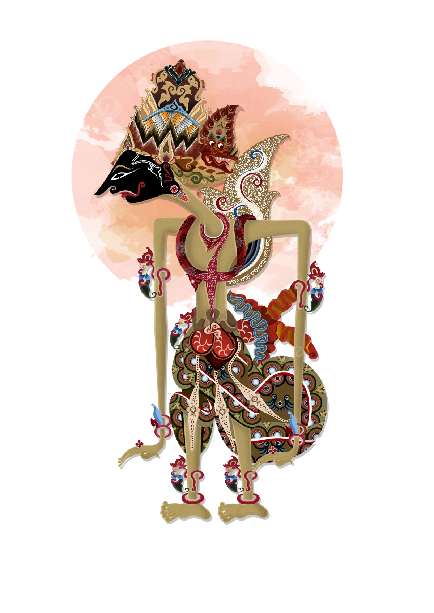
Kresna atau Krishna (Dewanagari: कृष्ण; IAST: Kṛṣṇa;) adalah salah satu dewa yang dipuja oleh umat Hindu, berwujud pria berkulit gelap atau biru, memakai dhoti kuning dan mahkota yang dihiasi bulu merak. Dalam seni lukis dan arca, umumnya ia digambarkan sedang bermain seruling sambil berdiri dengan kaki yang ditekuk ke samping. Legenda Hindu dalam kitab Purana dan Mahabharata menyatakan bahwa ia adalah putra kedelapan Basudewa dan Dewaki, bangsawan dari kerajaan Surasena, kerajaan mitologis di India Utara.
Secara umum, ia dipuja sebagai awatara (inkarnasi) Dewa Wisnu kedelapan di antara sepuluh awatara Wisnu, Kresna biasanya dipuja dengan istrinya Radha dan Rukmini yang merupakan inkarnasi Dewi Lakshmi , Dalam beberapa tradisi perguruan Hindu, misalnya Gaudiya Waisnawa, ia dianggap sebagai manifestasi dari kebenaran mutlak, atau perwujudan Tuhan itu sendiri,[1] dan dalam tafsiran kitab-kitab yang mengatasnamakan Wisnu atau Kresna, misalnya Bhagawatapurana, ia dimuliakan sebagai Kepribadian Tuhan Yang Maha Esa.[2] Dalam Bhagawatapurana, ia digambarkan sebagai sosok penggembala muda yang mahir bermain seruling, sedangkan dalam wiracarita Mahabharata ia dikenal sebagai sosok pemimpin yang bijaksana, sakti, dan berwibawa. Selain itu ia dikenal pula sebagai tokoh yang memberikan ajaran filosofis, dan umat Hindu meyakini Bhagawadgita sebagai kitab yang memuat kotbah Kresna kepada Arjuna tentang ilmu rohani.
Kisah-kisah mengenai Kresna muncul secara luas di berbagai ruang lingkup agama Hindu, baik dalam tradisi filosofis maupun teologis.[3] Berbagai tradisi menggambarkannya dalam berbagai sudut pandang: sebagai dewa kanak-kanak, tukang kelakar, pahlawan sakti, dan Yang Mahakuasa.[4] Kehidupan Kresna dibahas dalam beberapa susastra Hindu, yaitu Mahabharata, Hariwangsa, Bhagawatapurana, dan Wisnupurana.
Pemujaan terhadap dewa atau pahlawan yang disebut Kresna—dalam wujud Basudewa, Balakresna atau Gopala—dapat ditelusuri sampai awal abad ke-4 SM. Pemujaan Kresna sebagai Swayam Bhagawan, atau Tuhan Yang Mahakuasa, yang dikenal sebagai Kresnaisme, muncul pada Abad Pertengahan dalam situasi Gerakan Bhakti. Dari abad ke-10 M, Kresna menjadi subjek favorit dalam seni pertunjukan. Tradisi pemujaan di masing-masing daerah mengembangkan berbagai macam wujud/aspek Kresna seperti Jagadnata di Orissa, Witoba di Maharashtra dan Shrinathji di Rajasthan. Sekte Gaudiya Waisnawa yang terpusat pada pemujaan kepada Kresna didirikan pada abad ke-16, dan sejak tahun 1960-an juga telah menyebar di Dunia Barat, sebagian besar disebabkan oleh organisasi Masyarakat Internasional Kesadaran Kresna (International Society for Krishna Consciousness - ISKCON).[5]
Nama dan Gelar
Dalam aksara Dewanagari, Kṛṣṇa ditulis कृष्ण (dibaca [[Bantuan:Pengucapan|[kr̩ʂɳə]]]), dengan bunyi konsonan silabis Ṛ, atau disebut pula vokal Ṛ (dalam aksara Dewanagari disimbolkan dengan ृ, sedangkan dalam alfabet Fonetis Internasional disimbolkan dengan huruf [r̩ ] (info)). Dalam aksara Jawa, huruf vokal ृ tersebut dialihaksarakan sebagai huruf Pa cerek (huruf Ra repa dalam aksara Bali) yang melambangkan bunyi /rə/ daripada /r̩/ (ditulis dengan huruf Latin "Re"), karena bunyi konsonan silabis Ṛ seperti dalam bahasa Sanskerta tidak terdapat dalam bahasa Jawa dan Bali. Maka dari itu kata कृष्ण dialihaksarakan menjadi "Kresna" (dibaca [[Bantuan:Pengucapan|[krəsna]]]).
Kata kṛṣṇa dalam bahasa Sanskerta pada dasarnya merupakan kata sifat yang berarti "hitam", "gelap" atau "biru tua". Kata tersebut berhubungan dengan kata čьrnъ (crn, 'hitam') dalam rumpun bahasa Slavia. Sebagai kata benda feminin, kata kṛṣṇā digunakan dengan makna "malam, hitam, kegelapan" dalam kitab suci Regweda, dan sebagai iblis atau jiwa kegelapan dalam mandala (bab) IV Regweda. Untuk nama diri, kata Kṛṣṇa muncul dalam mandala VIII sebagai nama seorang penyair. Sebagai salah satu nama Wisnu, kata "Kṛṣṇa" terdaftar sebagai nama ke-57 dalam kitab Wisnu Sahasranama (Seribu Nama Wisnu). Berdasarkan nama tersebut, Kresna sering kali digambarkan dalam arca dengan kulit hitam maupun biru.
Kresna juga dikenal dengan berbagai macam nama, julukan, dan gelar, yang mencerminkan berbagai atribut dan hal-hal yang berkaitan dengannya. Dalam kitab Mahabarata dan Bhagawadgita, Kresna disebut dengan berbagai nama, sesuai karakteristiknya. Beberapa nama tersebut di antaranya: Acyuta (yang kekal; teguh); Arisudana (penghancur musuh); Bagawan (Yang Mahakuasa); Gopala (pelindung sapi); Gowinda (penggembala sapi); Hresikesa (penguasa indria); Janardana (juru selamat umat manusia); Kesawa (yang berambut indah); Kesinisudana (pembunuh raksasa Kesi); Madawa (suami dewi keberuntungan); Madusudana (pembunuh raksasa Madhu); Mahabahu (yang berlengan perkasa); Mahayogi (rohaniwan agung); Purusottama (manusia utama, yang berkepribadian paling baik); Warsneya (keturunan Wresni); Basudewa; Wisnu; Yadawa (keturunan Yadu); Yogeswara (penguasa segala kekuatan batin).
Di antara berbagai namanya, yang terkenal adalah Gowinda, "penggembala sapi", atau Gopala, "pelindung para sapi", merujuk kepada pengalaman masa kecil Kresna di Braj.[6][7] Beberapa nama lainnya dianggap penting bagi wilayah tertentu; misalnya, Jagatnata (penguasa alam semesta), terkenal di Puri, India Timur.[8]
- 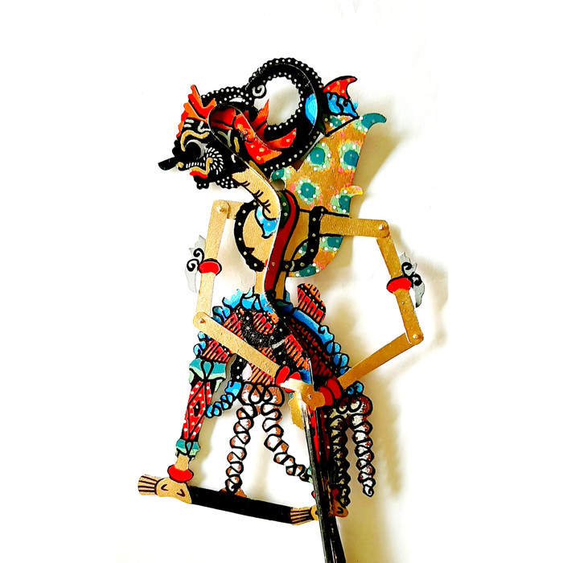
Gatotkaca (Dewanagari: घटोत्कच; IAST: Ghaṭotkaca) adalah seorang tokoh dalam wiracarita Mahabharata, putra Bimasena (Bima) atau Werkodara dari keluarga Pandawa. Ibunya bernama Hidimbi (Arimbi), berasal dari bangsa rakshasa. Gatotkaca dikisahkan memiliki kekuatan luar biasa. Dalam perang besar di Kurukshetra, ia menewaskan banyak sekutu Korawa sebelum akhirnya gugur di tangan Karna.
Di Indonesia, Gatotkaca menjadi tokoh pewayangan yang sangat populer. Misalnya dalam pewayangan Jawa, ia dikenal dengan sebutan Gatotkoco (bahasa Jawa: Gathotkaca). Kesaktiannya dikisahkan luar biasa, antara lain mampu terbang di angkasa tanpa menggunakan sayap, serta terkenal dengan julukan "otot kawat tulang besi".
Etimologi
Dalam bahasa Sanskerta, nama Ghaṭotkaca (घटोत्कच) secara harfiah bermakna "kepala gundul [yang seperti] kendi".[1] Nama ini terdiri dari dua kata, yaitu ghaṭaṁ (घटं) yang berarti "buli-buli" atau "kendi", dan utkaca (उत्कच) yang berarti "gundul".[2] Nama ini diberikan kepadanya karena sewaktu lahir kepalanya yang gundul mirip dengan buli-buli atau kendi.
Kelahiran
Menurut versi Mahabharata, Gatotkaca adalah putra Bima dari keluarga Pandawa yang lahir dari seorang rakshasa perempuan bernama Hidimbi. Hidimbi sendiri merupakan raksasa penguasa sebuah hutan; tinggal bersama kakaknya yang bernama Hidimba . Menurut versi ini, Arimbi bukan sekadar penghuni hutan biasa, melainkan putri dari Kerajaan Pringgadani, negeri bangsa rakshasa.
Kisah kelahiran Gatotkaca dikisahkan secara tersendiri dalam pewayangan Jawa. Namanya sewaktu masih bayi adalah Jabang Tetuka. Sampai usia satu tahun, tali pusarnya belum bisa dipotong walau menggunakan senjata apa pun. Arjuna (adik Bimasena) pergi bertapa untuk mendapatkan petunjuk dewa demi menolong keponakannya itu. Pada saat yang sama Karna, yang kelak menjadi panglima Kerajaan Hastina juga sedang bertapa mencari senjata pusaka. Karena wajah keduanya mirip, Batara Narada selaku utusan kahyangan memberikan senjata Kontawijaya kepada Karna, bukan kepada Arjuna. Setelah menyadari kesalahannya, Narada pun menemui Arjuna yang sebenarnya. Lalu Arjuna mengejar Karna untuk merebut senjata Konta, sehingga pertarungan pun terjadi. Karna berhasil meloloskan diri bersama senjata Konta, sedangkan Arjuna hanya berhasil merebut sarung pembungkus pusaka tersebut. Sarung pusaka Konta terbuat dari kayu mastaba yang ternyata bisa digunakan untuk memotong tali pusar Tetuka. Saat dipakai untuk memotong, kayu mastaba musnah dan bersatu dalam perut Tetuka. Kresna yang ikut serta menyaksikannya berpendapat bahwa pengaruh kayu Mastaba akan menambah kekuatan bayi Tetuka. Ia juga meramalkan bahwa kelak Tetuka akan tewas di tangan pemilik senjata Konta.
Jagoan Para Dewa
Menurut versi pewayangan Jawa, setelah berhasil dipotong pusarnya, Tetuka dibawa ke kahyangan oleh Narada yang saat itu sedang digempur oleh Patih Sekipu dari Kerajaan Trabelasuket. Patih tersebut diutus rajanya, Kalapracona untuk melamar bidadari bernama Batari Supraba. Tetuka dihadapkan sebagai lawan Sekipu. Semakin dihajar, Tetuka justru semakin kuat. Karena malu, Sekipu mengembalikan Tetuka kepada Narada untuk dibesarkan saat itu juga. Narada menceburkan tubuh Tetuka ke dalam kawah Candradimuka, di Gunung Jamurdipa. Para dewa kemudian melemparkan berbagai jenis senjata pusaka ke dalam kawah. Beberapa saat kemudian, Tetuka muncul ke permukaan sebagai seorang laki-laki dewasa. Segala jenis pusaka para dewa telah melebur dan bersatu ke dalam dirinya. Kemudian Tetuka bertarung melawan Sekipu dan berhasil membunuhnya dengan gigitan taringnya. Kresna dan para Pandawa saat itu datang menyusul ke kahyangan. Kresna memotong taring Tetuka dan menyuruhnya berhenti menggunakan sifat-sifat kaum raksasa. Batara Guru, raja kahyangan menghadiahkan seperangkat pakaian pusaka, yaitu Caping Basunanda, Kotang Antrakusuma, dan Terompah Padakacarma untuk dipakai Tetuka, yang sejak saat itu berganti nama menjadi Gatotkaca. Dengan mengenakan pakaian pusaka tersebut, Gatotkaca mampu terbang menuju Kerajaan Trabelasuket dan membunuh Kalapracona.
Pernikahan
Dalam versi Mahabharata, Gatotkaca menikahi Ahilawati, gadis dari Kerajaan Naga dan mempunyai anak bernama Barbarika. Dalam versi pewayangan Jawa, Gatotkaca menikah dengan sepupunya, yaitu Pregiwa, putri Arjuna. Ia berhasil menikahi Pregiwa setelah melalui perjuangan berat, yaitu menyingkirkan saingannya, bernama Laksmana Mandrakumara, putra Duryodana dari keluarga Korawa. Dari perkawinannya dengan Pregiwa, Gatotkaca memiliki putra bernama Sasikirana, yang menjadi panglima perang Hastinapura pada masa pemerintahan Prabu Parikesit, putra Abimanyu atau cucu Arjuna. Versi lain mengisahkan, Gatotkaca memiliki dua orang istri lagi selain Pregiwa, yaitu Suryawati dan Sumpaniwati. Dari keduanya masing-masing lahir Suryakaca dan Jayasumpena.
Raja Pringgandani
Gatotkaca versi Jawa adalah manusia setengah raksasa, tetapi bukan raksasa hutan. Ibunya adalah putri Prabu Tremboko dari Kerajaan Pringgadani. Tremboko tewas di tangan Pandu ayah para Pandawa akibat adu domba yang dilancarkan Sangkuni. Ia kemudian digantikan oleh anak sulungnya yang bernama Arimba. Arimba sendiri tewas di tangan Bimasena pada saat para Pandawa membangun Kerajaan Amarta. Takhta Pringgadani kemudian dipegang oleh Arimbi yang telah diperistri Bima. Suksesi kepemimpinan kelak diserahkan kepada putra mereka setelah dewasa.
Arimbi memiliki lima orang adik bernama Brajadenta, Brajamusti, Brajalamadan, Brajawikalpa, dan Kalabendana. Brajadenta diangkat sebagai patih dan diberi tempat tinggal di Kasatrian Glagahtinunu. Sangkuni dari Kerajaan Hastina datang menghasut Brajadenta bahwa takhta Pringgadani seharusnya menjadi miliknya, bukan milik Gatotkaca. Akibat hasutan tersebut, Brajadenta memberontak untuk merebut takhta dari tangan Gatotkaca yang baru saja dilantik sebagai raja. Brajamusti yang memihak Gatotkaca bertarung menghadapi Brajadenta. Kedua raksasa tersebut tewas bersama. Roh mereka menyusup masing-masing ke dalam kedua telapak tangan Gatotkaca, sehingga menambah kesaktian keponakan mereka tersebut. Setelah peristiwa itu, Gatotkaca mengangkat Brajalamadan sebagai patih baru, dengan gelar Patih Prabakiswa.
Kematian | Versi Mahabharata
Kematian Gatotkaca terdapat dalam jilid ketujuh kitab Mahabharata yang berjudul Dronaparwa, pada bagian Ghattotkacabadhaparwa. Ia dikisahkan gugur dalam perang di Kurukshetra pada malam hari ke-14. Perang besar tersebut adalah perang saudara antara keluarga Pandawa melawan Korawa. Mahabharata mengisahkan, sebagai seorang raksasa, Gatotkaca memiliki kekuatan luar biasa terutama pada malam hari. Setelah kematian Jayadrata di tangan Arjuna, pertempuran seharusnya dihentikan untuk sementara karena senja telah tiba. Namun Gatotkaca menghadang pasukan Korawa saat mereka dalam perjalanan menuju perkemahan mereka.
Pertempuran berlanjut; semakin malam, kesaktian Gatotkaca semakin meningkat. Banyak prajurit Korawa yang dibunuhnya. Seorang sekutu Korawa dari bangsa rakshasa bernama Alambusa maju menghadapinya. Gatotkaca menghajarnya dengan kejam karena Alambusa telah membunuh sepupunya, yaitu Irawan putra Arjuna pada pertempuran hari kedelapan. Tubuh Alambusa ditangkap dan dibawa terbang tinggi, kemudian dibanting ke tanah sampai hancur berantakan. Duryodana, pemimpin Korawa merasa ngeri melihat keganasan Gatotkaca. Ia memaksa Karna menggunakan senjata pusaka Indrastra pemberian Dewa Indra yang bernama Vasavishakti (menurut pewayangan Jawa, disebut senjata Konta) untuk membunuh rakshasa itu. Semula Karna menolak karena pusaka tersebut hanya bisa digunakan sekali saja dan akan dipergunakannya untuk membunuh Arjuna. Karena terus didesak, akhirnya Karna melemparkan pusakanya ke arah Gatotkaca. Menyadari ajalnya sudah dekat, Gatotkaca memikirkan cara untuk membunuh prajurit Korawa dalam jumlah besar sekaligus sekali serang. Gatotkaca pun memperbesar ukuran tubuhnya sampai ukuran maksimal dan kemudian roboh menimpa ribuan prajurit Korawa setelah senjata pamungkas Karna menembus dadanya. Pandawa sangat terpukul dengan gugurnya Gatotkaca. Dalam barisan Pandawa, hanya Kresna yang tersenyum melihat kematian Gatotkaca. Ia gembira karena Karna telah kehilangan pusaka andalannya sehingga nyawa Arjuna dapat dikatakan aman.
Versi Jawa
Perang di Kurukshetra dalam pewayangan Jawa biasa disebut dengan nama Baratayuda. Kisahnya diadaptasi dan dikembangkan dari naskah Kakawin Bharatayuddha yang ditulis tahun 1157 pada zaman Kerajaan Kadiri. Versi pewayangan mengisahkan, Gatotkaca sangat akrab dengan sepupunya yang bernama Abimanyu, putra Arjuna. Setelah mengetahui bahwa Abimanyu menikah dengan Utari, paman Gatotkaca yang bernama Kalabendana datang menemui Abimanyu dengan tujuan mengajaknya pulang, tetapi tidak berhasil. Gatotkaca justru memarahi Kalabendana yang dianggapnya lancang mencampuri urusan rumah tangga sepupunya itu. Karena terlalu marah, Gatotkaca memukul kepala Kalabendana. Mekipun perbuatan tersebut dilakukan tanpa sengaja, tetapi pamannya itu tewas seketika.
Ketika perang Baratayuda meletus, Abimanyu benar-benar tewas dikeroyok para Korawa pada hari ke-13. Pada hari ke-14, Arjuna berhasil membalas kematian putranya itu dengan cara memenggal kepala Jayadrata, ipar Duryodana. Akhirnya Duryodana memaksa Karna menyerang perkemahan Pandawa pada malam itu juga, meskipun hal itu melanggar peraturan perang. Setelah tahu bahwa para Korawa melancarkan serangan malam, pihak Pandawa mengirim Gatotkaca untuk menghadang. Gatotkaca sengaja dipilih karena Kotang Antrakusuma yang ia pakai mampu memancarkan cahaya terang benderang. Gatotkaca berhasil menewaskan sekutu Korawa yang bernama Lembusa. Sementara itu dua pamannya, yaitu Brajalamadan dan Brajawikalpa, tewas di tangan musuh mereka, masing-masing bernama Lembusura dan Lembusana.
Gatotkaca berhadapan dengan Karna, pemilik senjata Kontawijaya. Ia menciptakan kembaran dirinya sebanyak seribu orang sehingga membuat Karna merasa kebingungan. Atas petunjuk Batara Surya, Karna berhasil menemukan Gatotkaca yang asli. Ia pun melepaskan senjata Konta ke arah Gatotkaca. Gatotkaca mencoba menghindar dengan cara terbang setinggi-tingginya. Namun arwah Kalabendana tiba-tiba muncul menangkap Kontawijaya sambil menyampaikan berita dari kahyangan bahwa ajal Gatotkaca telah ditetapkan malam itu. Gatotkaca yang pasrah terhadap takdirnya berpesan supaya mayatnya bisa digunakan untuk membunuh musuh. Kalabendana setuju, kemudian menusuk pusar Gatotkaca menggunakan senjata Konta. Pusaka itu melebur dengan sarungnya, yaitu kayu mastaba yang masih tersimpan di dalam perut Gatotkaca. Setelah Gatotkaca gugur, arwah Kalabendana melemparkan jenazahnya ke arah Karna. Karna berhasil melompat sehingga lolos dari maut. Namun keretanya hancur berkeping-keping akibat tertimpa tubuh Gatotkaca. Pecahan kereta tersebut melesat ke segala arah dan menewaskan para prajurit Korawa yang berada di sekitarnya.
- 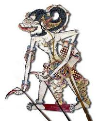
Hanoman (Sanskerta: हनुमान्; Hanumān) atau Hanumat (Sanskerta: हनुमत्; Hanumat), juga disebut sebagai Anoman, adalah salah satu dewa dalam kepercayaan agama Hindu, sekaligus tokoh protagonis dalam wiracarita Ramayana yang paling terkenal. Ia adalah seekor kera putih dan merupakan putra Batara Bayu dan Anjani, keponakan dari Subali dan Sugriwa. Menurut kitab Serat Pedhalangan, tokoh Hanoman sebenarnya memang asli dari wiracarita Ramayana, tetapi dalam pengembangannya tokoh ini juga kadangkala muncul dalam serial Mahabharata, sehingga menjadi tokoh antarzaman. Di India, hanoman dipuja sebagai dewa pelindung dan beberapa kuil didedikasikan untuk memuja dirinya.
Kelahiran
Hanoman lahir pada masa atau zaman Tretayuga sebagai putra Anjani, seekor wanara wanita. Dahulu Anjani sebetulnya merupakan bidadari, bernama Punjikastala. Namun karena suatu kutukan, ia terlahir ke dunia sebagai wanara wanita. Kutukan tersebut bisa berakhir apabila ia melahirkan seorang putra yang merupakan penitisan Siwa. Anjani menikah dengan Kesari, seekor wanara perkasa. Bersama dengan Kesari, Anjani melakukan tapa ke hadapan Siwa agar Siwa bersedia menjelma sebagi putra mereka. Karena Siwa terkesan dengan pemujaan yang dilakukan oleh Anjani dan Kesari, ia mengabulkan permohonan mereka dengan turun ke dunia sebagai Hanoman.
Salah satu versi menceritakan bahwa ketika Anjani bertapa memuja Siwa, di tempat lain, Raja Dasarata melakukan Putrakama Yadnya untuk memperoleh keturunan. Hasilnya, ia menerima beberapa makanan untuk dibagikan kepada tiga istrinya, yang di kemudian hari melahirkan Rama, Laksmana, Bharata dan Satrugna. Atas kehendak dewata, seekor burung merenggut sepotong makanan tersebut, dan menjatuhkannya di atas hutan di mana Anjani sedang bertapa. Bayu, Sang dewa angin, mengantarkan makanan tersebut agar jatuh di tangan Anjani. Anjani memakan makanan tersebut, lalu lahirlah Hanoman.
Salah satu versi mengatakan bahwa Hanoman lahir secara tidak sengaja karena hubungan antara Bayu dan Anjani. Diceritakan bahwa pada suatu hari, Dewa Bayu melihat kecantikan Anjani, kemudian ia memeluknya. Anjani marah karena merasa dilecehkan. Namun Dewa Bayu menjawab bahwa Anjani tidak akan ternoda oleh sentuhan Bayu. Ia memeluk Anjani bukan di badannya, tetapi di dalam hatinya. Bayu juga berkata bahwa kelak Anjani akan melahirkan seorang putra yang kekuatannya setara dengan Bayu dan paling cerdas di antara para wanara.
Sebagai putra Anjani, Hanoman dipanggil Anjaneya (diucapkan "Aanjanèya"), yang secara harfiah berarti "lahir dari Anjani" atau "putra Anjani".
Masa Kecil
Pada saat Hanoman masih kecil, ia mengira matahari adalah buah yang bisa dimakan, kemudian terbang ke arahnya dan hendak memakannya. Dewa Indra melihat hal itu dan menjadi cemas dengan keselamatan matahari. Untuk mengantisipasinya, ia melemparkan petirnya ke arah Hanoman sehingga kera kecil itu jatuh dan menabrak gunung. Melihat hal itu, Dewa Bayu menjadi marah dan berdiam diri. Akibat tindakannya, semua makhluk di bumi menjadi lemas. Para Dewa pun memohon kepada Dewa Bayu agar menyingkirkan kemarahannya. Dewa Bayu menghentikan kemarahannya dan Hanoman diberi hadiah melimpah ruah. Dewa Brahma dan Dewa Indra memberi anugerah bahwa Hanoman akan kebal dari segala senjata, serta kematian akan datang hanya dengan kehendaknya sendiri. Maka dari itu, Hanoman menjadi makhluk yang abadi atau Ciranjiwin.
Pertemuan dengan Rama
Pada saat melihat Rama dan Laksmana datang ke Kiskenda, Sugriwa merasa cemas. Ia berpikir bahwa mereka adalah utusan Subali yang dikirim untuk membunuh Sugriwa. Kemudian Sugriwa memanggil prajurit andalannya, Hanoman, untuk menyelidiki maksud kedatangan dua orang tersebut. Hanoman menerima tugas tersebut kemudian ia menyamar menjadi brahmana dan mendekati Rama dan Laksmana.
Saat bertemu dengan Rama dan Laksmana, Hanoman merasakan ketenangan. Ia tidak melihat adanya tanda-tanda permusuhan dari kedua pemuda itu. Rama dan Laksmana juga terkesan dengan etika Hanoman. Kemudian mereka bercakap-cakap dengan bebas. Mereka menceritakan riwayat hidupnya masing-masing. Rama juga menceritakan keinginannya untuk menemui Sugriwa. Karena tidak curiga lagi kepada Rama dan Laksmana, Hanoman kembali ke wujud asalnya dan mengantar Rama dan Laksmana menemui Sugriwa.
- 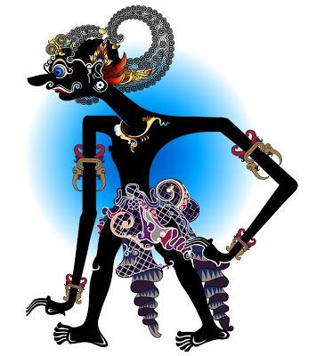
Anantasena, atau sering disingkat Antasena adalah nama salah satu tokoh pewayangan Jawa. Tokoh ini merupakan ciptaan para pujangga Jawa yang disisipkan ke dalam kisah Mahabharata, suatu wiracarita kuno karya Krishna Dwaipayana Byasa dari India, yang sering diadaptasi menjadi cerita pewayangan. Nama Anantasena maupun Antasena tidak ditemukan dalam naskah asli Mahabharata berbahasa Sanskerta (diterjemahkan oleh Kisari Mohan Ganguli).
Dalam pewayangan, tokoh ini dikenal sebagai putra bungsu Bimasena, serta saudara lain ibu dari Antareja dan Gatotkaca. Dalam pewayangan klasik versi Surakarta, Antasena merupakan nama lain dari Antareja, yaitu putra sulung Bimasena. Sementara menurut versi Yogyakarta, Antasena dan Antareja adalah dua orang tokoh yang berbeda. Akan tetapi dalam pewayangan zaman sekarang, para dalang Surakarta sudah biasa memisahkan tokoh Antasena dengan Antareja, sebagaimana yang dilakukan oleh para dalang Yogyakarta.
Asal-Usul
Antasena adalah putra bungsu Bimasena atau Werkudara, yaitu Pandawa nomor dua. Ia lahir dari seorang ibu bernama Dewi Urangayu putri Batara Baruna. Bima menikah dengan Urangayu dalam cerita Kali Serayu Binangun, yaitu saat Pandawa dan Kurawa berlomba untuk membuat sungai tembus ke samudra. Bima meninggalkan Urangayu dalam keadaan mengandung ketika ia harus kembali ke negeri Amarta.
Saat Antasena masih dalam kandungan, Kahyangan Suralaya diserbu oleh Prabu Dewa Kintaka dari Kerajaan Guwacinraka yang bemaksud untuk merebut dan menikahi Batari Kamaratih. Antasena yang masih dalam kandungan, dikeluarkan oleh Sang Hyang Narada, dan diajukan ke peperangan. Berkat perlindungan Sang Hyang Wenang, Antasena mampu mengalahkan Prabu Dewa Kintaka dan pasukannya. Setelah mampu mengalahkan musuh kahyangan, Antasena diserahkan kepada Sang Hyang Antaboga untuk dididik menjadi satriya.
Setelah dewasa ia berangkat menuju Kerajaan Amarta untuk menemui ayah kandungnya. Setibanya di Amarta, Antasena justru mendapat kabar buruk bahwa Bima dan saudara-saudaranya disekap oleh Korawa bernama Prabu Ganggatrimuka. Antasena pun berhasil menemukan Bima dan Pandawa lain dalam kondisi mati akibat disekap di dalam penjara besi yang ditenggelamkan di laut.
Berkat Cupu Madusena pusaka pemberian kakeknya, Antasena berhasil menghidupkan mereka kembali dan membunuh Ganggatrimuka. Setelah pertarungan itu, Antasena menikahi sepupunya yang bernama Janakawati yang tak lain adalah putri Arjuna.
selepas itu para Pandawa mempersiapkan pesta, karena Pandawa nomor tiga, Arjuna akan menikahkan salah satu putrinya Dewi Pergiwati, dengan putra mahkota Karajaan Amarta yaitu bernama Raden Pancawala, yang merupakan putra Pandawa nomor satu Yudhistira. Pernikahan antar saudara sepupu tersebut nyaris gagal karena ulah Begawan Durna yang berniat untuk menjodohkan Pergiwati dengan putra mahkota Hastina, Raden Lesmana Mandrakumara. Berkat bantuan Antasena, Pancawala berhasil melarikan Pergiwati dan terlindungi dari amukan Kurawa. Setelah kejadian tersebut Arjuna akhirnya sadar, dan meresmikan pernikahan Pancawala dengan Pergiwati.
Beberapa tahun setelah pernikahan antara Pancawala dengan Pergiwati, Antasena kemudian menikahi sepupunya yang bernama Dewi Janakawati yang juga putri Arjuna, setelah bersaing dengan Setyaka dan Lesmana Mandrakumara.

Abimanyu (Dewanagari: अभिमन्यु; IAST: Abhimanyu; diucapkan 'abi-man-yu') adalah seorang tokoh dalam wiracarita Mahabharata. Ia adalah putra Arjuna dan Subadra. Dalam wiracarita Mahabharata, ditetapkan bahwa Abimanyulah yang akan meneruskan Yudistira sebagai pewaris takhta. Riwayatnya dituturkan sebagai pahlawan yang tragis. Ia gugur dalam pertempuran besar di Kurukshetra sebagai salah satu kesatria termuda dari pihak Pandawa, karena baru berusia enam belas tahun. Abimanyu menikah dengan Utari, putri Raja Wirata dan memiliki seorang putra bernama Parikesit, yang lahir tak lama setelah ia gugur.
Menurut mitologi Hindu, Abimanyu adalah inkarnasi Warcasa, putra Dewa bulan. Ia membuat perjanjian bahwa putranya tinggal di Bumi hanya selama 16 tahun, sebagaimana ia tak dapat menahan perpisahan dengan putranya. Abimanyu berusia 16 tahun saat ia terbunuh dalam pertempuran.[1]
Kehidupan Awal
Dalam kitab Mahabharata dikisahkan bahwa semasih berada dalam rahim ibunya, Abimanyu sudah dapat mendengarkan percakapan antara ibu dan ayahnya. Mahabharata menjelaskan bahwa dari dalam rahim, ia bisa menguping pembicaraan Arjuna yang sedang mengajari Subadra tentang suatu formasi mematikan yang sulit ditembus bernama Cakrabyuha. Setelah Arjuna selesai membahas cara memasuki Cakrabyuha, akhirnya Subadra tertidur, sehingga Abimanyu tidak memiliki kesempatan untuk tahu bagaimana cara meloloskan diri dari formasi itu.[3] Setelah lahir, Abimanyu tinggal bersama ibunya di Dwaraka.
Dalam Sabhaparwa dikisahkan bahwa para Pandawa (termasuk Arjuna, ayah Abimanyu) kalah berjudi dengan para Korawa. Taruhannya adalah hukuman pengasingan selama 12 tahun, ditambah hidup dalam penyamaran selama setahun. Pada masa pengasingan itu, Abimanyu diasuh di bawah bimbingan pamannya, Kresna.
Dalam Wirataparwa dikisahkan bahwa Arjuna mengakhiri masa hukumannya di keraton Raja Wirata dengan menyamar sebagai guru tari. Setelah penyamarannya diakhiri, Arjuna menikahkan Abimanyu dengan Utari, putri Raja Wirata, untuk mempererat hubungan antara Pandawa dengan keluarga Raja Wirata, selain untuk menjalin persekutuan apabila perang antara Pandawa dan Korawa tak bisa dielakkan.[4]
- 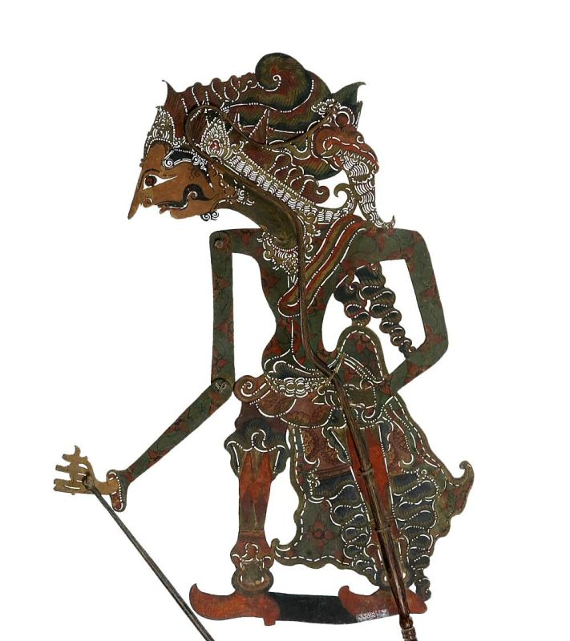
Bisma (Dewanagari: भीष्म; IAST: Bhīṣma) adalah salah satu tokoh utama dalam wiracarita Mahabharata, putra dari Prabu Santanu dan Dewi Gangga. Ia juga merupakan kakek dari Pandawa maupun Korawa. Semasa muda ia bernama Dewabrata (Dewanagari: देवव्रत; IAST: Dévavrata), tetapi berganti nama menjadi Bisma semenjak bersumpah bahwa ia tidak akan menikah seumur hidup. Bisma ahli dalam segala modus peperangan dan sangat disegani oleh Pandawa dan Korawa. Menurut Mahabharata, ia gugur dalam sebuah pertempuran besar di Kurukshetra oleh panah dahsyat yang dilepaskan oleh Srikandi dengan bantuan Arjuna. Dalam kitab Bhismaparwa dikisahkan bahwa ia tidak meninggal seketika. Ia sempat hidup selama beberapa hari dan menyaksikan kehancuran para Korawa. Bisma menghembuskan napas terakhirnya saat garis balik matahari berada di utara (Uttarayana).
Arti Nama
Nama bhiṣma dalam bahasa Sanskerta berarti "mengerikan" atau "mengundang ketakutan", karena ia amat disegani musuh-musuhnya dan keberaniannya ditakuti oleh para kesatria pada masanya. Dewabrata berarti "disukai para dewa". Nama Dewabrata diganti menjadi Bisma semenjak ia melakukan bhishan-pratigya, yaitu sumpah untuk membujang selamanya dan tidak akan mewarisi tahta ayahnya. Maka dari itu, bhiṣma dapat pula berarti "yang sumpahnya dahsyat (hebat)", karena ia bersumpah untuk hidup membujang selamanya dan tidak mewarisi takhta kerajaannya, untuk mencegah terjadinya perselisihan antara keturunannya dengan keturunan Satyawati, ibu tirinya.
Kelahiran
Menurut kitab Adiparwa, Bisma merupakan reinkarnasi dari salah satu Delapan Wasu yang bernama Prabasa. Karena Prabasa dan para Wasu lainnya berusaha mencuri sapi milik Resi Wasista, maka mereka dikutuk agar terlahir sebagai anak manusia. Dalam perjalanan menuju Bumi, mereka bertemu dengan Dewi Gangga yang juga dikutuk untuk turun ke dunia sebagai istri putra Raja Pratipa, yaitu Santanu. Kemudian, Para Wasu membuat kesepakatan dengan sang dewi bahwa mereka akan menjelma sebagai delapan putra Prabu Santanu dan dilahirkan oleh Dewi Gangga.
Dalam Adiparwa diceritakan bahwa Prabu Santanu menikah dengan Dewi Gangga, setelah menyetujui syarat bahwa sang prabu tidak akan melarang istrinya apabila melakukan sesuatu yang mengejutkannya. Tak lama setelah menikah, sang dewi melahirkan, tetapi ia segera menenggelamkan anaknya ke sungai Gangga. Sesuai perjanjian, Santanu tidak melarang perbuatan tersebut. Setelah tujuh kali melakukan perbuatan yang sama, anak kedelapan berhasil selamat karena tindakan Dewi Gangga dicegah oleh Santanu yang kesabarannya telah habis. Setelah didesak, Dewi Gangga pun menjelaskan bahwa anak-anak yang dilahirkannya adalah reinkarnasi Delapan Wasu yang dikutuk karena berusaha mencuri sapi milik Resi Wasista. Untuk meringankan penderitaan yang harus mereka tanggung di dunia manusia, sang dewi hanya membiarkan mereka hidup sementara. Namun, anak yang kedelapan—yang kemudian diberi nama Dewabrata—merupakan Wasu yang paling bertanggung jawab atas usaha pencurian sapi tersebut. Maka dari itu, sang dewi pun membiarkannya hidup lebih lama dibandingkan Wasu lainnya. Pada akhirnya, Dewi Gangga pun meninggalkan Santanu dengan membawa anak kedelapan tersebut, karena Santanu telah melanggar janjinya.
Sumpah Bisma
Dalam Adiparwa diceritakan bahwa 36 tahun setelah kepergian Dewi Gangga, Santanu menemukan putranya secara tidak sengaja di hilir sungai Gangga. Kemudian, Dewi Gangga muncul untuk menyerahkan hak asuh anak tersebut kepada sang prabu, dan memberi tahu namanya adalah "Dewabrata". Singkat cerita, Dewabrata dicalonkan sebagai pewaris takhta Hastinapura.
Beberapa tahun kemudian, Santanu jatuh cinta kepada putri nelayan bernama Satyawati. Ayah Satyawati bersedia menyerahkan putrinya dengan syarat bahwa keturunan Satywati diberikan hak atas takhta Hastinapura. Santanu tidak bisa menyanggupi syarat tersebut karena telanjur mencalonkan Bisma sebagai penerus takhta. Dengan berat hati, Santanu kembali ke kerajaannya. Tak lama kemudian, ia jatuh sakit karena kegagalannya untuk menikahi Satyawati. Dewabrata mengorek informasi dari kusir pribadi sang prabu, dan menemukan sumber penyakit ayahnya. Ia segera berangkat menuju kediaman Satyawati.
Di hadapan ayah Satyawati, Dewabrata bersumpah untuk tidak mewarisi takhta Hatsinapura, dan menyerahkan hak tersebut kepada keturunan Satyawati. Meskipun demikian, ayah Satyawati masih meragukan pengorbanannya, sebab pertikaian untuk memperebutkan takhta mungkin saja terjadi antara keturunan Bisma dengan keturunan Satyawati. Demi meyakinkan bahwa hal itu tidak akan terjadi, maka Dewabrata juga bersumpah untuk tidak menikah seumur hidup agar tidak memiliki keturunan demi menghindari perebutkan takhta kerajaan. Akhirnya, Satywati pun diserahkan untuk menjadi istri Santanu. Karena pengorbanannya, Dewabrata diberi nama Bisma oleh ayahnya, dan dianugerahi agar mampu bersahabat dengan Sang Dewa Waktu sehingga ia bisa menentukan waktu kematiannya sendiri.
Bisma memiliki dua adik dari ibu tirinya, yang bernama Citrānggada dan Wicitrawirya. Bisma mendidik dan melindungi mereka sebagai penerus Dinasti Kuru di Hastinapura. Sayangnya, Citranggada gugur dalam suatu pertempuran, sehingga Wicitrawirya dinobatkan sebagai pewaris takhta. Demi kebahagiaan adiknya, ia pergi ke Kerajaan Kasi dan memenangkan sayembara sehingga berhasil membawa pulang tiga orang putri bernama Amba, Ambika, dan Ambalika, untuk dinikahkan kepada Wicitrawirya. Namun, Amba mencintai Bisma, sementara Bisma menolak cintanya karena terikat oleh sumpah bahwa ia tidak akan menikah seumur hidup. Demi usaha untuk menjauhkan Amba dari dirinya, tanpa sengaja ia menembakkan panah menembus dada Amba. Sebelum menghembuskan napas terakhirnya, Amba berdoa agar dapat bereinkarnasi menjadi orang yang akan membunuh Bisma.
- 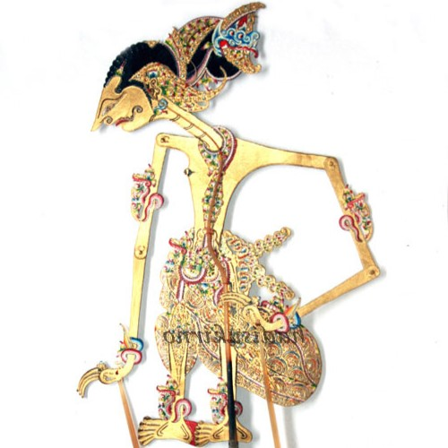
Yudistira (Dewanagari: युधिष्ठिर; IAST: Yudhiṣṭhira) alias Dharmawangsa, adalah salah satu tokoh protagonis dalam wiracarita Mahabharata. Ia merupakan seorang raja yang memerintah kerajaan Kuru, dengan pusat pemerintahan di Hastinapura. Ia merupakan yang tertua di antara lima Pandawa, atau para putra Pandu. Dalam tradisi pewayangan, Yudistira diberi gelar prabu dan memiliki julukan Puntadewa, sedangkan kerajaannya disebut dengan nama Kerajaan Amarta.
Etimologi
Nama Yudistira dibentuk dari kata yuddha (युद्ध; 'perang') dan sthira (स्थिर; 'teguh'),[1] yang dalam bahasa Sanskerta bermakna "teguh dalam peperangan". Dalam kitab Mahabharata, ia juga disebut dengan nama Bharata[2] (keturunan Maharaja Bharata) dan Ajatasatru[3] Ia juga dikenal dengan sebutan Dharmaraja, yang bermakna "raja Dharma", karena ia selalu berusaha menegakkan dharma sepanjang hidupnya.
Beberapa julukan lain yang dimiliki Yudhisthira adalah Kururaja (कुरुराज, "pemuka bangsa Kuru"), Kurunandana (कुरुनन्दन, "kesayangan Dinasti Kuru"), Kurupati (कुरुपति, "raja Dinasti Kuru"), Pandawa (पान्दव, "putra Pandu"), Parta (पार्थ, "putra Prita atau Kunti").
Beberapa di antara nama-nama di atas juga dipakai oleh tokoh-tokoh Dinasti Kuru lainnya, misalnya Arjuna, Bisma, dan Duryodana. Selain nama-nama di atas, dalam versi pewayangan Jawa masih terdapat beberapa nama atau julukan yang lain lagi untuk Yudistira, misalnya: Puntadewa ("derajat keluhurannya setara para dewa"), Yudistira ("pandai memerangi nafsu pribadi"), Gunatalikrama ("pandai bertutur bahasa"), Samiaji ("menghormati orang lain bagai diri sendiri").
Kelahiran
Yudistira adalah putra tertua pasangan Pandu dan Kunti, raja dan ratu dari kalangan Dinasti Kuru, dengan pusat pemerintahan di Hastinapura. Kitab Mahabharata bagian pertama (Adiparwa) mengisahkan tentang kutukan yang dialami Pandu setelah membunuh brahmana bernama Resi Kindama tanpa sengaja. Brahmana itu terkena panah Pandu ketika ia dan istrinya sedang bersanggama dalam wujud sepasang rusa. Menjelang ajalnya tiba, Resi Kindama sempat mengutuk Pandu bahwa kelak ia akan mati ketika bersetubuh dengan istrinya. Dengan penuh penyesalan, Pandu meninggalkan takhta Hastinapura dan memulai hidup sebagai pertapa di hutan untuk mengurangi hawa nafsu. Kedua istrinya, yaitu Kunti dan Madri dengan setia mengikutinya. Setelah lama tidak dikaruniai keturunan, Pandu mengutarakan niatnya untuk memiliki anak. Kunti yang menguasai mantra Adityahredaya segera mewujudkan keinginan suaminya. Mantra tersebut adalah ilmu pemanggil dewa untuk mendapatkan putera. Dengan menggunakan mantra itu, Kunti berhasil mendatangkan Dewa Dharma dan mendapatkan anugerah putra darinya tanpa melalui persetubuhan. Putra pertama itu diberi nama Yudistira. Dengan demikian, Yudistira menjadi putra sulung Pandu, sebagai hasil pemberian Dharma, yaitu dewa keadilan dan kebijaksanaan.
Kisah dalam pewayangan Jawa agak berbeda. Menurut versi ini, Puntadewa merupakan anak kandung Pandu yang lahir di istana Hastinapura. Kedatangan Bhatara Dharma hanya sekadar menolong kelahiran Puntadewa dan memberi restu untuknya. Berkat bantuan dewa tersebut, Puntadewa lahir melalui ubun-ubun Kunti. Dalam pewayangan Jawa, nama Puntadewa lebih sering dipakai, sedangkan nama Yudistira baru digunakan setelah ia dewasa dan menjadi raja. Versi ini melukiskan Puntadewa sebagai seorang manusia berdarah putih, yang merupakan kiasan bahwa ia adalah sosok berhati suci dan selalu menegakkan kebenaran.
Masa muda dan pendidikan
Yudistira dan keempat adiknya, yaitu Bima (Bimasena), Arjuna, Nakula, dan Sadewa kembali ke Hastinapura setelah ayah mereka (Pandu) meninggal dunia. Pada waktu itu, Hastinapura dipimpin oleh Dretarastra, kakak Pandu yang buta.[4] Kelima putra Pandu—yang terkenal dengan sebutan para Pandawa—membuat sepupu mereka, yaitu para putra Dretarastra (seratus Korawa yang dipimpin Duryodana) merasa iri. Bisma (sesepuh Dinasti Kuru) dan Widura (perdana menteri) lebih menyukai Yudistira daripada putra Dretarastra, sehingga Duryodana merasa cemas apabila Yudistira berhasil dinobatkan sebagai putra mahkota. Duryodana berusaha menyingkirkan kelima Pandawa, terutama Bima yang dianggap paling kuat. Di lain pihak, Yudistira selalu berusaha untuk menyabarkan Bima supaya tidak membalas perbuatan para Korawa.
Pandawa dan Korawa kemudian mempelajari ilmu agama, hukum, dan tata negara daripada Resi Krepa. Dalam pendidikan tersebut, Yudistira tampil sebagai murid yang paling pandai. Krepa sangat mendukung apabila tahta Hastinapura diserahkan kepada Pandawa tertua itu. Setelah itu, Pandawa dan Korawa berguru ilmu perang kepada Resi Drona. Dalam pendidikan kedua ini, Arjuna tampil sebagai murid yang paling pandai, terutama dalam ilmu memanah. Sementara itu, Yudistira sendiri lebih terampil dalam menggunakan senjata tombak.